企業テックブログRSS
企業のテックブログの更新をまとめた
RSSフィードを配信しています
コピー
Slackに貼り付けると更新を受け取ることができます
Atom URL
コピー
RSS URL
コピー
フィード
ブログ一覧
直近1週間の更新
3/1 (火)
「こんなところも？」 phpunitのアップグレードに伴う変更箇所
コネヒト開発者ブログ
こんにちは！ Webエンジニアをやっている西中と言います。 弊社では開発組織として運用しているサービスのフレームワークのアップグレード対応を定期的に行っています。 今回は私がCakePHP4.3対応をしていった中で躓いたポイントをいくつかピックアップしていきたいと思います。 CakePHP4.3にアップグレードするにあたって、phpunitのバージョンも8.0にアップグレードしました。 CakeP...
5時間前
週刊Railsウォッチ: Ruby標準のCSVライブラリは優秀、if代入のコーディングスタイル、rambulanceほか（20220301後編）
1
TechRacho
こんにちは、hachi8833です。 週刊Railsウォッチについて 各記事冒頭には🔗でパーマリンクを置いてあります: 社内やTwitterでの議論などにどうぞ 「つっつきボイス」はRailsウォッチ公開前ドラフトを（鍋のように）社内有志でつっついたときの会話の再構成です👄 お気づきの点がありましたら@hachi8833までメンションをいただければ確認・対応いたします🙏 TechRachoで...
5時間前
【登壇情報】3/11 Observability Conference 2022「NewsPicks のプロダクト開発エンジニアが実践する スキルとしての SRE」
Uzabase for Engineers
3/11(金) 15:05-15:45 Observability Conference 2022のTrack A「NewsPicks のプロダクト開発エンジニアが実践する スキルとしての SRE」にNewsPicks Web Product Unitチームの飯田 有佳子が登壇します。 NewsPicks のプロダクト開発エンジニアがスキルとしての SRE をどのように実践しているか、開発者ならで...
6時間前
Elasticsearchをゼロダウンタイムで再起動する
every Engineering Blog
こんにちは。MAMADAYSバックエンドチームのsa9sha9です。最近Diablo3にハマりました。 MAMADAYSでは検索基盤としてElasticsearch(以下ES)を利用していますが、時たま再起動を実施したいケースがあります。 本記事では、ゼロダウンタイムでのESの再起動を実現するための注意点を実際のフローに沿ってまとめたいと思います。 MAMADAYSのアーキテクチャについては以前の...
7時間前
FlutterFire CLIを使用してfirebase環境を構築する方法
Pentagon Blog
株式会社PentagonにてFlutterエンジニアをしているtsurumiiiです。 この記事はFirebaseの環境をコマンドで構築する「FlutterFire CLI」というものを紹介する記事になります。 【こんな […]
7時間前
Zabbix6.0のネイティブHA機能を試してみた | NHN テコラス Tech Blog
AWS、機械学習、IoTなどの技術ブログ
はじめに エンジニアリング本部 マイグレーションチームに所属しています、tkgです。 卵かけご飯には醤油と生姜と出汁を入れるタイプです。よろしくお願いします。 さて、2/15に個人的に楽しみにしていたZabbix 6.0 LTSがリリースさ... 続きを読む Zabbix6.0のネイティブHA機能を試してみた first appeared on NHN テコラス Tech Blog | AWS、機...
7時間前
GitLab を利用したプロジェクトに Scala Steward を導入して依存関係を継続的に更新する仕組みを作った話
2
pixiv inside
はじめましての方ははじめまして。21新卒エンジニアの Javakky です。 今回は、リポジトリの依存関係を最新に保つための取り組みを始めたので、そのレポートになります。 背景 私の部署では Scala というプログラミング言語と sbt というビルドツールを利用して開発が行われています。突然ですが、当時の依存関係設定を抜粋してきたので見てみましょう。 dependencies DB 周りの依存関...
8時間前
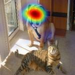
Grad-CAMだけじゃない画像認識におけるCAM手法を徹底解説
3
ABEJA Tech Blog
長期インターン生の木村です。 今回、以前から興味を持っていた画像認識モデルにおける説明可能なAIのクラス活性化マッピング手法を調査してみました。 説明可能なAIとは 近年、深層学習ベースの画像認識モデルは製造業、医療、自動運転など至る場面で社会実装が進められていますが、ディープなラーニングを行っているだけに推論の判断根拠を人間が解釈できない問題があります。医療、自動運転のような命に関わる領域では安...
8時間前
開発業務を支援する社内ツールの紹介
スタディスト開発ブログ - Medium
8時間前
iptables まとめ【Linux ファイアウォール】 | RAKUS Developers Blog
3
ラクス エンジニアブログ
はじめに 皆様こんにちは。 インフラ開発課でインフラエンジニアをしているsnnmrです。 ラクスで働きだしてかれこれ数年、その中でも比較的使用頻度の高いiptablesについて改めてまとめてみました。 はじめに iptablesとは Netfilterとは iptables 書式 よく使うオプションとチェイン filterテーブル natテーブル mangleテーブル rawテーブル conntr...
9時間前
【Shotcut】キーフレームを使って動きをつける方法 ~ 初心者向け ~
SIOS Tech. Lab
こんにちは。サイオステクノロジーの川田です。 「テロップに動きを出したい！」「BGMに強弱をつけたい！」「静止画に少し動きをつけたい！」時ってありますよね。 そのような場合は「キーフレーム」を使うと動きをつけることができ [...] 【Shotcut】キーフレームを使って動きをつける方法 ~ 初心者向け ~ first appeared on SIOS Tech. Lab.
9時間前
サポート終了迫る！CentOS7 を AlmaLinux8 へ移行してみた
1
Wiz テックブログ
CentOS7からAlmaLinux8への移行を試してみます。
9時間前
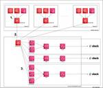
SecurityHubを利用したAWSサービスのSlack通知
1
hey Product Blog
こんにちは。hey セキュリティ本部の清水です。 hey ではAWS Organization を利用して複数の AWS アカウントをまとめて管理しています。AWS Organization と連携できるサービスは年々増えており、hey では Amazon GuardDuty, AWS IAM Access Analyzer, AWS CloudTrail などのサービスを AWS Organiz...
9時間前
おばあちゃんでもわかる―図解API～非エンジニアのIT”こそ勉”シリーズ
SIOS Tech. Lab
みなさん、こんにちは。サイオステクノロジーでマーケティング業務を行っている中谷です。今回はAPIについて勉強しました。 IT業界にいる方なら、誰でも「API」を聞いたことがある。 しかし、エンジニアではない方や、IT業界 [...] おばあちゃんでもわかる―図解API ～非エンジニアのIT”こそ勉”シリーズ first appeared on SIOS Tech. Lab.
9時間前
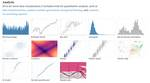
Observable を活用した IoT データの可視化探索ガイド
4
NTT Communications Engineers' Blog
はじめに こんにちは、Things Cloud のカスタマーサクセスチーム 伊藤、佐々木、高橋、三橋です。私たちは、データプラットフォームサービス部で IoT プラットフォーム「Things Cloud」のサービス開発やお客様への技術支援を担当しています。 さて、皆さんはデータを見やすいようにグラフ化したり、表にまとめる時はどんな方法を使っていますか？最近では、JupyterLab や Pytho...
11時間前
スタートアップ企業がゼロから始めた障害訓練
hacomono TECH BLOG
こんにちは、hacomono SRE の大西です。 hacomonoに入社して半年が経過し、だいぶ自社のシステムの全容がわかるようになってきました。 今回は私が全容がわかるようになるまでに自分がトライしてきたことや、社内に協力を得てきたことの一部についてお話させていただきたいと思います。 テーマは「障害訓練」です。 1. 障害訓練とは？ 今回はわかりやすいようにサーバダウンを例としてお話をさせてい...
11時間前
グラフを隣接行列・隣接リストで実装しよう！アルゴリズムを学べるプログラミング問題集
1
paiza開発日誌
こんにちは。倉内です。ある程度プログラミングの基本を学び終えた方の中には、アルゴリズムや数学的知識を深めたいという方もいらっしゃると思います。paizaラーニングで公開している、プログラミング練習問題を集めた「レベルアップ問題集」では、アルゴリズムに関する問題集も多くご用意しています。解答コード例や解説を誤用している問題も多数あるので、「アルゴリズムに興味はあるけど難しそうだし…」という方もぜひ挑...
11時間前
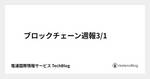
ブロックチェーン週報3/1
電通国際情報サービス TechBlog
電通国際情報サービス、クロスイノベーション本部、オープンイノベーションラボの比嘉です。 ブロックチェーン週報3/1いってみようか。今週から基本、火曜日に出すことにしました。 Web3 Web3のニュース PoWへの批判 PoWへの批判のニュース その他の記事 Web3 前回、Web3とは、サービスの運営者(中央管理者)がサービスを独占せず、ユーザーもサービスの運営に関われるようなサービスのことだと...
11時間前
【UIデザイン】初めてプロジェクトに参加して学んだ3つのこと
Pentagon Blog
こんにちは、株式会社PentagonでUIデザイナーをしている坪井です。 2022年の2月初旬よりチームにジョインしました。 早速とあるプロジェクトのデザインを任せていただいたのですが、実は私、デザイナーとして仕事をする […]
11時間前
Bazelの設定ファイルを解析してアップデートを半自動化する
mixi developers - Medium
11時間前
インターンシップでマルチA100 GPUサーバをぶん回してみた
20
NTT Communications Engineers' Blog
はじめに 2月14日から25日までの2週間、NTTコミュニケーションズのインターンシップに参加させていただいた八木です。普段は大学院で画像処理の高速化に関する研究をしています。インターンシップでは技術コースのうち「AI/MLシステムとの統合を志向した、メディアAI技術の研究開発」ポストに応募しました。全日リモートでの参加で、joinしたチームのマルチA100 GPUサーバなどを用いて画像認識モデル...
12時間前
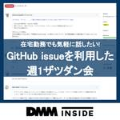
エンジニア向けの週1「ザツダン会」が継続している理由
10
DMM inside
GitHub issueを利用した週1の「ザツダン会」について紹介します。
12時間前
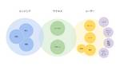
freee CREのこれから〜お問い合わせの横断対応イメージ
1
freee Developers Hub
こんにちは。freee CREチームのマネージャーをしているkishimotoです。 早いもので、前回「freeeのCREチームとは」という記事を書いてから1年ほどが経ちました。 CREチームのミッションは変わらず、エンジニアリングのスキルを活用して、「お問い合わせを減らす」「お問い合わせの解決時間を短くする」ということを掲げています。 developers.freee.co.jp 今回は、CRE...
12時間前
Nginxのログをフィルタリングしてみる
虎の穴開発室ブログ
こんにちは、虎の穴ラボの山田です。先日、開発環境の構成を変更していた際にNginxのログを見て、「一部のログをフィルタしたい」と思うことがありました。今回は、そういった時に使えるNginxの設定をご紹介します。 基本編 ログのフィルタに必要な設定は2つあります。1つはログ出力の判定、もう1つは判定結果の反映です。 ログ出力の判定 まずは「どういったログ出力を抑制するか」というログ出力の判定を設定し...
12時間前
LINEミニアプリを使った新しい顧客接点とは ｜サービスの特徴や事例を解説
テックファームブログ
「アプリを利用してCRMを行いたいけれど、どうすれば良いか分からない…。」とお困りの企業担当者は多いと思います。 誰もが知るアプリであるLINEの中で使用する「LINEミニアプリ」を、ご存知でしょうか？ LINEミニアプ […]
12時間前
Markov Decision Processes
ユニファ開発者ブログ
This is Shakil from Product Engineering Department. This time I wanted to talk a bit about Markov Decision Processes which forms the basis of Reinforcement Learning. What are MDPs (Markov Decision Pro...
12時間前
マイクロサービスからモノリシックへ。チャットサーバ移行の道のり
11
Timee Product Team Blog
はじめに はじめまして、バックエンドエンジニアのぽこひで (@pokohide) です。 最近の日課はゲーム実況者「兄者弟者」の「DYING LIGHT 2 STAY HUMAN」と「エルデンリング」を見る事です。 本記事ではタイミーで長年使われていた、マイクロサービスとして切り出されたチャットサーバ（以降、旧チャットサーバと呼びます）をタイミーの中核を担うモノリシックなRuby on Rails...
12時間前
Excite × iXIT TechConで「Spring Bootという強すぎるフレームワークについて」を発表しました！
エキサイト TechBlog.
こんにちは。 エキサイト株式会社の三浦です。 先日、弊社内で Excite × iXIT TechCon というカンファレンスが行われました！ tech.excite.co.jp 私は「Spring Bootという強すぎるフレームワークについて」というタイトルで発表させていただきました。 Spring Bootとは何なのか、そしてその強み・弱みは何かを説明させていただいているので、ぜひ見てみていた...
12時間前
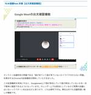
第2回オンラインハッカソンで作成した拡張機能の裏話
UUUM攻殻機動隊(エンジニアブログ)
こんにちは。エンジニアのendo_shizukaです。 UUUMに入社して1年半が経ちました。 「入社して1年半経ったとか時間の流れ早すぎん！？」って感じで日々業務に勤しんでいます。 さて、今回ブログを書くにあたりネタをいろいろ探していたのですが、 個人的にかなり大変だけど楽しかった第2回オンラインハッカソンで作成した機能でつまずいたポイントについて書いていきたいと思います。 第2回のオンラインハ...
13時間前
副業QAエンジニアは週3時間でいかに価値を出すか〜組織横断のヒッティング・パートナーをめざして〜
Engineers' Blog
副業のQAスペシャリストとしてマネーフォワードHRソリューション本部プロダクト事 … 続きを読む → Tags: Del.icio.us Facebook TweetThis Digg StumbleUpon Comments: 0 (Zero), Be the first to leave a reply! You might be interested in this: goo...
13時間前
Women Techmakers プログラムのご紹介とアンバサダー募集のお知らせ
Google Developers Japan
Women Techmakers はテクノロジー業界に関わっている女性を Google が応援 / 支援するプログラムです。今回はプログラムの紹介とアンバサダーの募集をします。 プログラムの目的 Google は女性開発者が活躍できる環境をサポートすることで、すべての開発者が、よりユーザーの多様性を反映し、人々のニーズの多様性に対応できるようになると考えています。 また、IT 業界で活躍している女...
13時間前
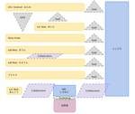
チームトポロジーを用いたRettyプロダクト開発体制の解説 #ちいとぽ
2
Retty Tech Blog
マネージャーの常松です。 2021年12月1日にTeam Topologiesの翻訳 チームトポロジー 価値あるソフトウェアをすばやく届ける適応型組織設計 (愛称 #ちいとぽ) が発売になりましたが、皆さんもう読まれましたか? この書籍には事前レビューから参加させていただいていたのですが、「出版されたら自社の開発体制を図にして話せると良いな」とずっと考えていました。ただタイミングを逸してしまい・・...
13時間前
Intuneの先進認証によるMac自動キッティング
ZOZO TECH BLOG
デバイス管理に従事する全国の情シスの皆様、日々の業務お疲れ様です。コーポレートエンジニアリング部ファシリティブロックの佐藤です。いわゆる”情シス”と呼ばれる役割のチームに所属し、PCやネットワーク機器などの社内インフラの管理・運用に携わっています。 本記事では、MDM（Microsoft Intune）と自動デバイス登録（ADE）を併用したMacの自動キッティングの事例を紹介します。さらに、自動キ...
13時間前
ビジュアル作成で気を付ける5つの事
2
BOOK☆WALKER Tech Blog
はじめまして、デザイナーの宮下です。普段は主に「ニコニコ漫画」「次にくるマンガ大賞」等のUIデザイン・グラフィックデザインを担当しています。今回はバナーやサイトのメインビジュアル等を作成する際に私が気をつけている事を、弊社が2021年末に送付したグリーティングカードのビジュアル作成の過程に沿ってお話させていただきます。 グリーティングカードって何？ グリーティング（greeting）とは英語で「あ...
13時間前
Misoca の PDFテスト
4
弥生開発者ブログ
こんにちは、弥生の日高 @hidakatsuya です。普段は クラウド見積・納品・請求書サービス「Misoca」 の開発に携わっています。 Misoca には、作成した請求書などの帳票を PDF としてダウンロードするだけでなく、PDF の内容を印刷したり、郵送したり、FAX として送信するなど、PDF が関連する機能が多くあります。そして、毎日非常に多くの PDF が Misoca 上で生成さ...
13時間前
「現場で役立つシステム設計の原則」読書会レポート vol.1
リゾームのテックブログ
株式会社リゾーム システム企画・開発部 第4グループの尾古(@patorash)です。 先週から、社内の有志で新たに読書会を始めましたので、それをレポートしていきたいと思います。 読書会の題材 読書会の題材として選んだのは、現場で役立つシステム設計の原則 〜変更を楽で安全にするオブジェクト指向の実践技法です。 現場で役立つシステム設計の原則 〜変更を楽で安全にするオブジェクト指向の実践技法作者:増...
13時間前
GAS で Slack 投稿してみたというお話
1
デザインワン・ジャパン Tech Blog
はじめに こんにちは！株式会社デザインワン・ジャパンでエキテンの開発を担当しているサービス開発部の寺井です。 弊社ではスライド出社という制度があり、前日までに申請さえすれば、勤務開始時間を7時から11時の間で1時間単位でずらすことができます。 この制度は「前日夜遅いから翌日は11時出社にしよう」「退社後予定あるから7時出社にしよう」という感じで使える、プライベートの予定に強い制度です。 ただ、自由...
13時間前
Sigstore によるコンテナイメージの Keyless Signing
Flatt Security Blog
This image includes the work that is distributed in the Apache License Version 2.0 こんにちは。株式会社Flatt SecurityでインターンをしているMarina (@marin_a___) です。本稿はソフトウェアサプライチェーン領域で注目を集める Sigstore プロジェクトについての記事です。 Sigst...
13時間前
TFLintを使ったterraformのチェックとカスタムルールの設定
4
カンムテックブログ
インフラエンジニアの菅原です。 カンムはサービスの運用にAWSを使用し、そのリソースの管理にterraformを使用しています。 リソースの定義はGitHub上でコードとして管理されているので、何かリソースを追加する場合はプルリクエストを作成してレビューを受けることになるので、運用のポリシーに反するようなリソースの作成はある程度防ぐことができます。 しかしレビューはあくまで人の目によるものなので、...
14時間前
メルカリShopsにおける開発の進め方
1
メルカリエンジニアリングブログ
こんにちは！ソウゾウの Software Engineer の @takatoshiono です。連載：メルカリShops 開発の裏側 Vol.2 の11日目を担当させていただきます。 この記事ではメルカリShopsを開 […]
14時間前
リファクタDays - 開発生産性を上げる取り組み -
1
LIFULL Creators Blog
こんにちは、エンジニアの加藤です。LIFULL HOME'Sの注文住宅領域を支えるエンジニアチームのマネジメントを担当しています。 皆さん、技術的負債の解消やリファクタリングなどどのように行っていますか？ 長年の開発業務により蓄積された技術的負債は、開発生産性を低下させる要因として多くの方の頭を悩ませているかと思います。 私の所属する部署では開発生産性の向上をミッションとして掲げており、技術的負債...
14時間前
スマートホームで職場(自室)環境を改善してみた
2
KAKEHASHI Tech Blog
こんにちは、カケハシでMusubi Insight のバックエンドエンジニアをしている高田です。 私はカケハシへの入社と同時に兵庫県移住し、現在フルリモートで勤務しています。 そのため自室=職場であり、より生産性が上がり、気持ちよく働けるよう環境を改善したいと前々から考えていました。 そこで、冬休み使って職場（自室）の環境改善を行なったので、その内容をご紹介できればと思います。 解決したい課題 と...
14時間前
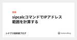
sipcalcコマンドでIPアドレス範囲を計算する
シナプス技術者ブログ
こんにちは、技術部ネットワーク課の上曽山です。 CiscoルータでACLやOSPFの設定をする時に必要となる情報の1つにワイルドカードマスクがあります。 ネットマスクをビット反転させるだけなのですが、設定の際よく間違いそうになるので確認を行うための良いツールがないか探していたところsipcalcというコマンドを見つけました。 簡単に使い方をご紹介します。 必要パッケージ 基本的な使い方 オプション...
14時間前
「0回目のポストモーテム」としてのプレモーテムのすすめ
1
スタディサプリ Product Team Blog
こんにちは。SREの@kyontanです。スタディサプリのSREチームにジョインしてから初のブログ記事となります。 つい先日、スタディサプリ 中学講座が大幅リニューアルされました。*1 今回は、そのリリースを自信を持ってユーザーの皆様へお届けするために実施した、プレモーテムという取り組みについてご紹介したいと思います。 *1:https://prtimes.jp/main/html/rd/p/00...
14時間前
新卒データサイエンティスト研修「DSOps研修」とは何か? | CyberAgent Developers Blog
31
サイバーエージェント デベロッパーズブログ
1. DSOps研修のイントロ はじめまして，AI事業本部 Dynalystでデータサイエンティスト ...
14時間前
Distributed Training(分散学習)入門！HorovodとAzure Machine Learningで試してみました。
CCCマーケティング データベースマーケティング研究所の Tech Blog
こんにちは、技術開発ユニットの三浦です。 子どもが図書館から借りてきた本のタイトルを何気なく眺めていたのですが、どれもワクワクするようなタイトルなんですよね。ふかふかのソファーのような雲や、ジュースでいっぱいの池が待っている、そんな夢のような世界に行けてしまいそうな気持ちになります。 最近Distributed Training(分散学習)に興味を持っていて、どんな技術なんだろうと調べ始めました。...
14時間前
【RaspberryPi】【VMWareWorkstation】RaspberryPiのSDカードをWindowsで読み書きする方法
BFT名古屋 TECH BLOG
こんにちは！BFT名古屋支店の猫です。 とある事情によりRaspberry Piで使用しているSDカード内のデータを取り出す必要に迫られたのですが、意外と躓いてしまったので記事にしたいと思います ラズパイで使用しているSDカードをWindows PCで読み書きしたい 人の失敗談が好き という方はぜひ読んでみてください。 結論だけ知りたい方はこちら 背景 ラズパイのOSが起動しなくなった レスキュー...
14時間前
最も安全なKubernetesアーキテクチャーをデザインする方法
Sysdig
最も安全なKubernetesアーキテクチャーをデザインする方法
14時間前
Kubernetesセキュリティ101：基礎とベストプラクティス
Sysdig
Kubernetesセキュリティ101：基礎とベストプラクティス
14時間前
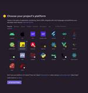
クライアントでのエラー監視要員としてSentryを導入した話
1
トラストバンクテックブログ
どうもはじめまして、トラストバンクでフロントエンドエンジニアをしている田口です。 早速ですが少し前にそのふるさとチョイスにSentryを導入したので、今回はそれについて書こうと思います。 解決したかったこと Sentryへの登録と仮導入 仮導入で気になったこと dsn って公開していいの？ コード量が増えた チューニング whiteListUrlsの設定 tracesSampleRateの設定 テ...
15時間前
MyBatisで大量データを扱う
ASKUL Engineering BLOG
こんにちは。ASKULのほかほかごはんです。最近は商品データに関するバッチ開発を担当しています。 バッチ開発では、社内外へデータを連係する際に大量のデータをDBから取得し、csvなどのファイルに加工する機会が多くあります。 本記事では効率的にQuery結果をハンドリングする方法として、 MyBatisの ResultHandler と Cursor を紹介します。 なお、弊社ではSpring Bo...
15時間前
Emacs でだって Docker で開発したい！
6
esm アジャイル事業部 開発者ブログ
こんにちは。wat-aro です。 Docker 環境で開発する際に VSCode の Remote Container はとても便利ですね。 でも今まで Emacs で開発してきた人は VSCode ではなく Emacs を使いたいはずです。 ここでは僕が Emacs + Docker 環境でどのように開発しているかを紹介します。 docker コマンド まずは docker コマンドを使えなく...
15時間前
社内のエンジニアの交流を促すチームを運営して得た知見
2
LIVESENSE ENGINEER BLOG
はじめまして。 株式会社リブセンスで転職会議というサービスを開発しております、Web系エンジニアの@ishitanです。 今回は、コロナ禍で交流が希薄になりがちなエンジニア同士の交流をサポートしているチームの話を書きたいと思います。 はじめに LETの立ち上げ 開催ツール、開催頻度やトークテーマなどについて 開催して良かった点 運営に参加してよかった点 運営して見えてきた課題 運営課題への解決策 ...
15時間前
【看護師イラスト集】制作者目線で紹介してみる
株式会社クイックのWebサービス開発blog
こんにちは、イラストレーターのネモトマです。 会社では日々色々なイラスト制作を行っているのですが その中でも手掛けることが多い「看護師イラスト集」について ちょっぴりご紹介も兼ねてお話したいと思います。 「看護師イラスト集」とは www.kango-roo.com 看護師🎨イラスト集は、看護師を中心とした、医療系のイラストサイトです。 公開されているイラストは、どなたでも無料・会員登録不要で、ご...
16時間前
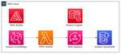
AWS Amplify FunctionsからAPI(GraphQL)をAPI Keyを使わずに利用する方法
Fusic Tech Blog
17時間前
【失敗談】MyBatisでNOLOCKと同じことをやりたかった
エキサイト TechBlog.
はじめに エキサイト株式会社 バックエンドエンジニアの山縣です。 現在は、既存サービスのリビルド（PHP / BEAR.Saturday → Java / SpringBoot）を担当しています。 SpringBootでDBアクセスをするにあたってMyBatisを利用していますが、MyBatisのMapperではNOLOCKヒントに対応していないため、 簡単なSQL文であったとしてもその都度NOL...
1日前
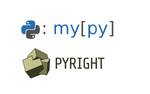
Mypy と Pyright の解析手法と型情報の比較
フューチャー技術ブログ
<img src="/images/20220301a/mypy.png" alt="" width="600" weihgt="376"> <h1 id="はじめに"><a href="#はじめに" class="headerlink"
1日前
2/28 (月)
セグメント木の形式的検証
Wantedly Engineer Blog
本記事では、セグメント木と呼ばれるデータ構造の諸操作の中でも実装が複雑な、区間積を求めるクエリと、適当な始点を与...
1日前
OpenShiftのControl Plane/Worker Nodeのエッジ向けデプロイメントのHW最小要件まとめ
赤帽エンジニアブログ
はじめに みなさん、こんにちは。 Red Hatでソリューションアーキテクトをしている小野です。 OpenShift にはエッジ向けデプロイメントとして、Control Plane と Worker のデプロイメントパターンがいくつか存在します。 本稿では、各デプロイメントパターンの違いや使い分け、CPU やメモリのサイジングなどの最小ハードウェア要件をまとめます。 まとめ記事ですので、ぜひブック...
1日前
閉包テーブル（closure table）でツリー構造を表現する
2
ROXX開発者ブログ
この記事は個人ブログと同じ内容です www.ritolab.com // www.oreilly.co.jp 「SQL アンチパターン」という書籍を読んでいて、ナイーブツリー（素朴な木）という、ツリー構造（再帰的な階層構造）の表現について書かれた章があり面白かったので試してみました。 隣接リスト（adjacency list） よくある（んだけどツラいよねっていう）パターンとして「隣接リスト」とい...
1日前
クラシルAndroidチームに新しい仲間が増えたので、Wevox values card onlineでリモートコミュニケーションしてみました
dely tech blog
皆さんこんにちは。クラシルAndroidチームのparayaです。 少しずつ梅や桜も咲き始めて春を感じる季節になってきましたね🌸2月に入り、クラシルでは新たにAndroidエンジニアが1名ジョインしました🎉Jさん入社おめでとうございます！🎉🎂🎉 クラシルAndroidチームでは新メンバーとの交流を深めるために、Wevox values cardを利用しています。Wevox values ...
1日前
英会話力の測定アプリ「PROGOS（プロゴス）」のデザイン改修の話し
RareJob Tech Blog
こんにちは。気付いたらレアジョブ入社して早くも3年が経ちましたデザイナーのキョウです。 コロナの影響でずっと中国の実家に帰れずにホームシックがMAX状態ですが、早く春になって、いろいろなところに出かければいいなと祈ってばかりです。 さてと、つい最近弊社がリリースした「PROGOS（プロゴス）」という英語スピーキング力無料診断アプリをご存知でしょうか？ progos.ai アプリの特徴として、AI採...
1日前
週刊Railsウォッチ: dartsass-railsがリリース、webpack-mergeツール、Rubyが29歳にほか（20220228前編）
1
TechRacho
こんにちは、hachi8833です。つっつきの日がお誕生日でした🎉 今日はRubyの29歳の誕生日では。おめでとう！いつもありがとう！ — igaiga (@igaiga555) February 23, 2022 Happy Birthday, Ruby! 🌸 Ruby language was born (well, actually named) on February 24th, 19...
1日前
【新機能】Power Automateペインの有効化
cloud.config Tech Blog
こんにちは、あおいです。 Power AppsからPower Automateを起動する場合、ボタンを配置してOnSelectプロパティでアクションタブからPower Automateを選択し、対象のフローを選択します。 […] 【新機能】Power Automateペインの有効化 first appeared on cloud.config Tech Blog.
1日前
インターン生がリファクタPJに配属されて学んだこと
OpenWork Tech Blog
インターンの時期のオフィスからの一枚。渋谷で雪が降りました こんにちは。バターコーヒーの飲み過ぎで最近身体が黄色くなりつつある気がする、22卒内定者の佐藤です。 現在はインターン生としてWebアプリの開発に携わっています。 インターン生の実情や新卒社員の様子については21卒の先輩方が既に書いてくださっているので、今回は私がインターン中に「リファクタPJ」に配属された時の様子を綴らせていただきます。...
1日前
Fluent Bitを導入しました：ローカル実行・確認方法と、導入の過程でハマったこと
Uzabase for Engineers
AlphaDrive、NewsPicks兼務でエンジニアしている大場です。 最近はNewsPicks Webの新基盤開発を行っています。 新基盤はNext.jsで開発していてAWSのFargateで構築しているのですが、このFargate上で取得したログをS3、New Relicに送るためにFluent Bitを導入しました。 今回はローカルでの実行・確認方法と、導入の過程で問題になったことを紹介...
1日前
仮想通貨の価格予測コンペティションで優勝した話
Opt Technologies Magazine
はじめに こんにちは！ AIソリューション開発部の岩田です。2021年に開催されたデータ分析コンペティションサイトNishikaの仮想通貨予測のコンペティションで優勝した話について紹介します。 データ分析のコンペティションとは データ分析コンペティションとは、主催企業が与えた課題について機械学習や統計分析を用いて挑むイベントです。主にオンラインで行われ、国外ではKaggle、国内のものではSIGN...
1日前
新しくVPoEに就任した森住さんってどんな人？今までのキャリアは？なにをするの？
4
SmartHR Tech Blog
こんにちは。エンジニアマネージャの 吉成 です。 本記事では 2022年1月に VPoE に就任された森住さんについて、同時期に CTO から CEO になった芹澤さんと一緒にアレコレ深堀りした様子をお届けしたいと思います。 森住さんの今までのキャリアやSmartHRでやってきたこと、そしてプロダクトエンジニアグループのこれからについて伺いました。 SmartHR に入るまで 吉成： 今日はよろし...
1日前
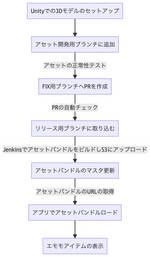
ミラティブのUnityアセット運用とそれを支えるCI/CD
Mirrativ Tech Blog
こんにちは、ミラティブUnityエンジニアの菅谷です。 ミラティブでは週に一回以上のペースでエモモのイベントを行っており、1つのイベントごとに約40個の衣装やエモモアイテムを追加しています。 エモモアイテムの多くはUnityを活用して作られており、アセットバンドルとして追加・更新されます。 今回はハイペースなアセットバンドルの更新と運用を支える技術について解説します。 エモモアイテムがユーザーに届...
1日前
サービス運用10年以上の重み、弁護士ドットコムのユニットテスト速度改善
6
弁護士ドットコム株式会社 Creators’ blog
初めまして、弁護士ドットコムでエンジニアをやっている @namizatork です。 第1回目で @komtaki さんが書いた 「弁護士ドットコムサービスのビジネスと共にみるマイクロサービスの進化」 がプチバズりしていたので第2回目となる今回、少し 滑らないか 心配ですが頑張って書きます。 本記事では、サービス開始から10年以上が経過したサービスのユニットテストを改善したという内容をお話しします...
1日前
既存リソースをTerraformでimportする作業を楽にする
57
KAYAC engineers' blog
既存のリソースをterraform importする際の作業を楽にする方法として、aws-cliやgcloud-cliの出力を利用して必要な情報を自動生成する手法について紹介します。
1日前
RSGT2022 の動画が公開されたので、社内で視聴会をやりました
2
ROXX開発者ブログ
この記事は個人ブログと同じ内容です RSGT2022 の動画が公開されたので、社内で視聴会をやりました // みなさん、こんにちは！ ROXX で back check のエンジニア兼、スクラムマスターをやっています。ぐっきーこと山口壮太 (@Area029S)です。 さて、Regional SCRUM GATHERING Tokyo 2022（以下、RSGT2022）が終わって早2ヶ月が経ちまし...
1日前
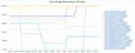
MicroservicesSREのEmbedded先でのお仕事
3
メルカリエンジニアリングブログ
こんにちは。メルカリで SRE として働いている shmizumo です。 本記事では、 MicroservicesSREチームが実際にEmbedded先でどのような改善を行っているかをいくつか紹介したいと思います。 メ […]
1日前
社内スキルチェンジプロジェクトのご紹介
4
シー・エス・エス イノベーションラボ（ブログ）
みなさん、こんにちは。 デジタル・トランスフォーメーション推進開発部の林と申します。 今回は私が主導で実施してきたスキルチェンジプロジェクトについてご紹介いたします。 １．はじめに ２．スキルチェンジプロジェクトの概要 ３．身に着ける技術 ４．どんな成果が得られるのか ①トレンドの技術を身に着ける ②新しいことを始めるコツを身に着ける ③「チーム」での開発を経験する ５．スキルチェンジプロジェクト...
1日前
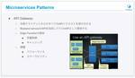
社内勉強会開催レポ（データ分析コンペの紹介 | Microservices）
CADDi Tech Blog
キャディでエンジニア採用を担当しております片渕です。 今回は、エンジニアの社内勉強会「STUDDi」にてプレゼンがありました一部の情報（2ネタほど）を、レポート形式でお伝えしたいと思います。 STUDDIは、エンジニア全 […] The post 社内勉強会開催レポ（データ分析コンペの紹介 | Microservices） appeared first on CADDi Tech Blog.
1日前
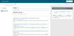
KCSドキュメントの紹介
赤帽エンジニアブログ
レッドハットの杉村です。Ansible のテクニカルサポートをしています。毎月1つは何か書くことを目標にしています。 しかしながら2月はあっという間に過ぎてしまい、28日になってしまいました。今月はKCS (Knowledge Centered Service) について紹介しようと思います。 製品やサービスのナレッジを提供するサービスは各社ありまして、一般に KCS (Knowledge Cen...
1日前
エンジニアとのやりとりでインハウスデザイナーが心がけていること
SO Technologies 開発者ブログ
こんにちは。AG-Boost事業部デザイナーの村田です。AG-Boostというサービスの画面設計やWebデザインなどをしております。 今回は、デザイナーの私がエンジニアやPMと仕事をする上で、心がけていることを5つ紹介します。 ※あくまで私個人の話なので、一般論ではないです その前に 私はSO Technologiesに社名変更する前の、前身の会社から在籍しておりまして、会社的には密かな長老です。...
1日前
アプリのダウンロードを促すInstagram広告作成時の注意点
Pentagon Blog
こんにちは。株式会社PentagonでUIデザイナー、Webデザイナーをしているmaoです。 先日、Instagram広告のデザインをさせていただく機会がありました。 今回クライアントが広告のデザインを作りたい目的として […]
1日前
【23卒】～３月開催～オンライン説明会★IT業界・エンジニアの将来像に！代表田中も登場します！
アプリ開発・制作／システム開発のYAZ
【23卒】～エンジニア志望の学生必見～オンライン説明会開催日決定！ 今回、IT業界研究やエンジニアを目指す学生を対象に オンライン座談会の開催を予定しています！ 当日は、代表の田中や人事の齊藤が、企業理念やビジョン、研修 […]
1日前
新卒から4年勤めたディップ株式会社を退職します
dip Engineer Blog
はじめに こんにちは、PHPで求人系サービスの開発や社内向けツールの開発を行なっている @taku-0728 です。 今回はタイトル通り、ディップ株式会社を退職することになったので退職エントリを書こうと思います。 ディップを受けようか迷っている人、ディップにどんな人がいるのか知りたい人の参考になればと思います。 今までやってきたこと 採用管理システムの開発 新卒で入って一番最初に入ったチームです。...
1日前
今更だけど話したいWeb APIのこと。
SIOS Tech. Lab
こんにちは。 このブログではWeb APIとは何かを説明します。 技術者以外でも理解できるような内容だと思います。 Web APIとは Web APIとは、Web上でAPIのやり取りを可能にしたものです。 [...] 今更だけど話したいWeb APIのこと。 first appeared on SIOS Tech. Lab.
1日前
9年目の新卒技術研修のカリキュラムと作り方
GMO Developers
はじめに 開発者向け研修のGMOテクノロジーブートキャンプ（以下、GTB）は今年で制度が始まって9年目となりました。 当社グループは毎年100名前後の新卒を迎え入れており、そのうちの半分程度がエンジニアリングやクリエイテ […]
1日前
社内ラジオを1年間運営し続ける秘訣
42
pixiv inside
こんにちは、アドプラットフォーム事業部でアナリティクスエンジニアをしているucchi-です。 ピクシブでは社員向けの情報発信やコミュニケーション促進のために「社内ラジオ」という社内番組を運営しています。 本日は社内ラジオを1年間運営し続けて得た気付きや知見をシェアします。 背景 新型コロナウイルスでリモートワークが進む中で、社内コミュニケーションの場が減り、社内の情報共有の機会が失われる、という課...
1日前
ポッドキャスト番組「セキュリティのアレ」が2021年度 総務大臣奨励賞を受賞──運営者のひとり、IIJ 根岸にインタビュー
42
IIJ Engineers Blog
こんにちは、IIJ Engineers blog 編集部です。 今回は、2021年度「サイバーセキュリティに関する総務大臣奨励賞（以下、総務大臣奨励賞）」を受賞したポッドキャスト番組「セキュリティのア...
1日前
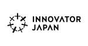
失敗する練習と準備
3
Innovator Japan Engineers’ Blog
こんにちは、CTOの山岡（@hiro_y）です。 エンジニアをやっている皆さんなら、プログラミングはバグが付きものであることがおわかりかと思います。バグがゼロであることはあり得ないし、もしゼロという結果が出たなら、その結果の方を疑ってかかった方がよいとされているぐらいです（全くないとは言いませんが、極めてまれです…）。 これは言ってみれば、失敗を最初から想定し、許容する態度だとも言えます。必ず失敗...
1日前
良いソースコードを書くための11のポイント【スキルアップしたいエンジニア向け】
1
Pentagon Blog
こんにちは、株式会社Pentagonの山本です。プログラミングをはじめたばかりの頃、スキルアップを目指して「より良いコードとは何か」ということ考えながらアプリ開発をしていました。 「どうしたらエンジニアとしてスキルアップ […]
1日前
プルリクエストによる開発をするメリット・プルリク作成時の注意事項８点
Pentagon Blog
こんにちは！株式会社Pentagon代表の山本です。弊社のプルリクエストの運用に関して説明する機会があったので、今回「プルリクエストの意味とメリット・注意事項」についてまとめてみました。 本記事を読み終えると、プルリクエ […]
1日前
インフラ裏話、テンパった話
10ANTZ Developers Blog
こんにちは。 サービスインフラの玉木です。 今回は「インフラ裏話、テンパった話」について執筆したいと思います。 インフラはテンパったらアウトであると痛感するのですが、例え自分が作業している状況でも客観的に自分の作業を問うのがテンパらないコツと思います。 ちな ...
1日前
銀座Rails#41聴講レポート
aumo Tech Blog – アウモテックブログ
初めまして。2020年4月にグリー株式会社にエンジニアとして新卒入社したセキヤです。 本記事では、2022年 1月25日にオンライン開催された、銀座RailsというRailsに関する技術知識交換イベントの#41に聴講側として参加した話をします。
1日前
AWSの請求情報にIAMユーザーのアクセスを許可させる方法
Pentagon Blog
こんにちは！株式会社Pentagonの山本です。 今回の記事は「あれ？ ”Billing”サービスへのアクセスを許可してるのに請求情報にアクセスできない...」そんな方のための記事です。 【この記事を読むメリット】 この […]
1日前
【Flutterでのアプリ開発】デザイナーはマテリアルデザインを知っておくべき
Pentagon Blog
こんにちは！株式会社Pentagonの山本です。 今回の記事では、Flutterでアプリ開発をするにあたって、UI/UXデザイナーが知っておくべきことをまとめています。 【この記事を読むメリット】 この記事を読むと、Fl […]
1日前
iOSアプリのダークモード対応方法まとめ
Pentagon Blog
こんにちは。株式会社Pentagonの山本です。 今回、ダークモードについて解説する機会があったので、記事にまとめてみました。 【この記事を読むメリット】 この記事を読むとダークモードの回避方法・対応方法・対応の必要性が […]
1日前
AWSアカウントのお支払方法の設定方法
Pentagon Blog
こんにちは！株式会社Pentagonの山本です。 【調査の動機】 お客様からAWSの支払い方法を変更したいとご要望があったので、わかりやすくまとめてみました。 【この記事を読むメリット】 この記事を読むと、AWSの支払い […]
1日前
まだまだある！Python、PHP、Java、JavaScript、Ruby、C、C#など28言語で遊べるプログラミングゲーム
1
paiza開発日誌
こんにちは。谷口です。以前こちらの記事でpaizaのプログラミングが楽しく学べる学習コンテンツをいくつかご紹介しました。paiza.hatenablog.compaizaにはまだまだゲーム感覚で学べるコンテンツを公開していますのでご紹介します。 プログラミングの学習で何から始めたらよいかわからない 継続できる自信がない 問題をたくさん解いて練習したい コードをたくさん書いて手を動かしたい といった...
1日前
過去最大規模の社内カンファレンス「Excite × iXIT TechCon」を開催しました！
エキサイト TechBlog.
はじめに エキサイトでエンジニアをしている おおしげ（ @_ohshige ） です。 このたび、エキサイトHD（エキサイトとiXIT）の技術者向けの社内カンファレンス「Excite × iXIT TechCon」を開催し、大成功と言ってもいい内容となったのでご報告いたします。 これまでは勉強会やLT会といった小規模なものは開催されてきましたが、それを超える規模のものとしては初めての開催になりまし...
1日前
IoT SiteWise を使用してデータを取り込んでみた
Blogical
こんにちは、ロジカル・アーツの井川です。 しばらく前に、PoC で IoT SiteWise を使用して工場の設備データをクラウドにアップするということをしました。当時は東京リージョンは対応していなかったのですが、それから色々変化があったので紹介したいと思います。
1日前
Dapps を Truffle + Ganache から Hardhat に移行してみた
mixi developers - Medium
1日前
Azure Application Gatewayを爆速で理解する
APC 技術ブログ
こんにちは、コンテナソリューション事業部の髙井です。 本日は「爆速で理解する」シリーズの第二弾、Application Gatewayです。 第一弾の「Azure Policyを爆速で理解する」に続く記事が出せたことに内心ホッとしています。 （安易に第一弾と銘打ってしまうことの大変さを学ぶいい機会でした） techblog.ap-com.co.jp さて、本日のお品書きは以下です。 Applica...
1日前
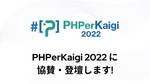
PHPerKaigi 2022 に協賛・登壇します!
1
PR TIMES 開発者ブログ
こんにちは、開発本部の植江田です。PR TIMES は PHPerKaigi 2022 にゴールドスポンサーとして協賛します。また、PHPerKaigi 2022 に登壇します! PR TIMES とは? 企 […]
1日前
FutterをLinuxサーバ上で利用する方法
Pentagon Blog
こんにちは、株式会社Pentagonでインフラ・バックエンド開発をしている石渡倭です。 今回はFlutter Webを検証するにあたってサーバ上で利用する方法を解説します。 サーバはLinuxを利用する前提です。 【この […]
1日前
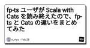
fp-ts ユーザが Scala with Cats を読み終えたので、fp-ts と Cats の違いをまとめてみた
HERP TechHub
tl; dr Scala の fp ライブラリ Cats と、TypeScript の fp ライブラリ fp-ts を比較してみました。主に言語仕様の違い（評価戦略の違いや型コンストラクタの有無
1日前
HRBrainの開発の要。CTO鈴木が語る“技術”の話と、これからの新卒メンバーに期待すること
1
HRBrain Blog
現在就職活動中の学生に向けて、CTOの鈴木に聞きました。 新卒からずっと変わらない、技術者として大切にしていること 現在入社五年目で、CTOとEX IntelligenceというサービスのTech Leadを兼任しています。キャリアとしてはHRBrainが三社目になりますが、エンジニアとしてのスタンスはずっと変わっていないですね。システムというのは使う側の人が必ずいるので、その人たちがどう受け取る...
1日前
Spring Bootで、文字列型の空クエリパラメータを受け取るときの注意点
1
エキサイト TechBlog.
こんにちは。 エキサイト株式会社の三浦です。 Spring BootのAPI等で空のクエリパラメータを受け取るとき、受け取り側の型や「空」の指定方法によって取得される値が違うことはご存知でしょうか？ 今回は、その違いについて紹介していきます。 Spring Bootとクエリパラメータ 通常URLでクエリパラメータをつける時は、以下のようにします。 https://sample/?query1=te...
1日前
チャット×探索アドベンチャーゲーム「RescueME ネット越しのカウンセラー」をiOS/Androidにてリリースしました！
historia Inc – 株式会社ヒストリア
チャット×探索アドベンチャーゲーム 「RescueME ネット越しのカウンセラー」 iOS/Androidにてリリース！ 本日、自社オリジナルタイトル「RescueME ネット越しのカウンセラー」をiOS/ […] The post チャット×探索アドベンチャーゲーム「RescueME ネット越しのカウンセラー」をiOS/Androidにてリリースしました！ first appeared on h...
1日前
モバイルアプリにおけるディープリンクとメルカリShopsでの実装
1
メルカリエンジニアリングブログ
こんにちは！ソウゾウの Software Engineer の@gentleです。連載：メルカリShops 開発の裏側 Vol.2の10日目を担当させていただきます。 メルカリShopsはメルカリのアプリ内でサービスを提 […]
1日前
【全力土下座案件】JAWS-UG SRE支部#2登壇の件
Engineers' Blog
皆さん、先日のJAWS-UG SRE支部#2はご覧になりましたか？ こんにちは。 … 続きを読む → Tags: Del.icio.us Facebook TweetThis Digg StumbleUpon Comments: 0 (Zero), Be the first to leave a reply! You might be interested in this: ICカ...
1日前
Public APIのバージョニングの仕組みを解説
3
freee Developers Hub
こんにちは、freeeでアプリケーションエンジニアをしているmonacaです。 私が前回書いた記事では、主にfreeeでの働き方について書きました。 現在私は、愛知県に住みながら、Public APIやアプリストアを開発する東京のLEGOチームで仕事をしています。 いまは、コロナウィルスの状況を見て、中部オフィスに出社し、社内でワイワイしながらリモートで仕事をしたり、ちょっと変わった体験を楽しんで...
1日前
AWS API Gatewayでスタブを作ってみる
虎の穴開発室ブログ
こんにちは、虎の穴ラボのH.Y.です。 開発で、スタブが欲しくなるタイミングってありますよね。 でも、スタブを作るために、1から環境作って開発するのも、稼働環境を用意するのも手間なので、 いいサービスがないかなと調べていたら、AWS API Gatewayで簡単にできるとのことでした。 参考の記事を見る限り、環境構築も必要なくブラウザ上でできそうなので、作ってみることにしました。 参考： 【AWS...
1日前
ヤプリのフロントエンドチーム@2022年を紹介します
Yappli Tech Blog
こんにちは、フロントエンドの山田です。 補足すると別記事にも登場する「サーバサイドの山田」と同一人物です。 現在はサーバサイドとフロントエンドを兼務してます。 tech.yappli.io さて、今回はフロントエンドの山田として、私達フロントエンドチームについて紹介させていただきます！ フロントエンドチームについて 早速、フロントエンドチームのメンバーを紹介します。 Aihara … 2015年入...
2日前
エムスリーエンジニアリンググループの紹介資料を公開しました！
エムスリーテックブログ
こんにちは、電子カルテチーム 兼 採用チームの鳥山 (@to_lz1) です。 今回は、開発業務の傍ら準備してきたエムスリーのエンジニアリンググループ紹介資料 2022年版を公開しましたので、その紹介をさせて頂ければと思います。 speakerdeck.com 背景 進め方とプロセス 改めて、エムスリーとチームについて プロダクトの軸 チームごとの軸 アーキテクチャの軸 まとめ / We are ...
2日前
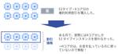
Google Compute Engine(GCE)の確約利用割引を徹底解説。AWSとの違いも説明
G-gen Tech Blog
G-gen の杉村です。 Google Cloud (GCP) の仮想サーバのサービスである Google Compute Engine (GCE) には 確約利用割引 (Committed use discounts) という割引の仕組みがあります。 公式ドキュメントが少々難解なので、本記事では確約利用割引の仕組みを分かりやすく解説します。 また、 Amazon Web Services (AW...
2日前
hidekのエンジニアと長話 第12-3回【全文書き起こし】~ゲスト：MNTSQ Co-Founder 安野貴博氏~
stand.fm テックブログ
stand.fmで配信中の「hidekのエンジニアと長話」12人目のゲストは、MNTSQ株式会社 Co-Founderの安野貴博さんです。 「hidekのエンジニアと長話」は、メルペイVPoEのhidek（木村秀夫）さんをメインパーソナリティにお招きし、ゲストエンジニアとともに作っていくスペシャルトーク番組です。 続きをみる
2日前
全文検索 MySQL FULLTEXTインデックスからElasticsearchへ切り替えた話
Leverages Tech Blog
はじめに こんにちは、レバレジーズ フリーランスHub開発チームです。 現在、弊社が運営するフリーランスHub というサービスでは検索エンジンとしてElasticsearchを採用しています。 この記事では、エンジニアがサービスの成長速度と工数を考慮した上で、Elasticsearchを採用するに至った背景や理由、そして、MySQLからElasticsearchへ移行した結果どれくらいパフォーマン...
2日前
ヤンキー卒と東大卒AI起業組が手を組んだ。「DMMチャットブースト」はなぜ好調なのか
1
DMM inside
「DMMチャットブースト」のキーマンである緒方、横関、大野にサービス好調の裏側を聞きました。
2日前
「推測不可能性」だけで安心？セキュアなURL生成について考える
Flatt Security Blog
多くのWebサービスにおいて、ブログ記事やドキュメントの公開・下書き共有のためにURLを発行する機能が存在していると思います。このようなURLに関して、第三者に知られたくない場合「推測不可能なURL」を発行するといったセキュリティ観点は広く知られているかと思いますが、それ以外にはどのような観点が存在しているでしょうか。
2日前
ロバストネス図を開発で活用してみた話
Sansan Builders Blog
こんにちは。技術本部 Bill One Engineering Unit の前田です。普段はBill One のWebアプリケーション開発をしつつ、チーム内ではPdL（プロダクトリード）という役割を担っています。入社して初めてのSansan Builders Blogの執筆になります。よろしくお願いします。 今回は、『ユースケース駆動開発実践ガイド』で紹介されているロバストネス図を実際の開発で利用...
2日前
【オンラインMeetup イベントレポート】ZOZO Tech Talk #4 - Webフロントエンド
ZOZO TECH BLOG
こんにちは、ZOZO CTOブロックの@ikkouです。 ZOZOでは、2/25にZOZO Tech Talk #4 - Webフロントエンドを開催しました。 zozotech-inc.connpass.com 本イベントは、これまで夕刻に開催してきたMeetupとは異なり、ランチタイムに開催する「ZOZO Tech Talk」シリーズです。ZOZO Tech Talkでは、ZOZOがこれまで取り...
2日前
【Datastax Enterprice】 DSE/RHELクラスターを構築してみた
SIOS Tech. Lab
DSE(Datastax Enterprise)クラスターをRHEL(Red Hat Enterprise Linux)で構築する手順を説明していきます。 DSEクラスターを構築して、DSEを試してみましょう。 &nbs [...] 【Datastax Enterprice】 DSE/RHELクラスターを構築してみた first appeared on SIOS Tech. Lab.
2日前
完成後も編集できる！ネオンサインの作成方法【Illustrator】
Raccoon Tech Blog [株式会社ラクーンホールディングス 技術戦略部ブログ]
デザイン戦略部のスエノです。 最近作成したネオンサインオブジェクトが編集できて便利だったので、作成方法をご紹介します。 今回作成するネオンサインの特長です。 Adobe Illustrator のみで作成できる（＝ Ad … "完成後も編集できる！ネオンサインの作成方法【Illustrator】" の続きを読む
2日前
【TURING】End-to-Endで限定コースをぐるぐる走る機械学習モデルを作って実際に車を動かした話【自動運転】
3
TURINGさんのフィード
こんにちは、TURING株式会社でエンジニアをしている しおつか です。 この記事を読んでいただいている皆様の多くはTURINGって？そんな感じだと思います。 名前を知っていただいている方でも、最近Twitterとかで聞くけど結局なにやってるの？実際なにかやったの？という感じかもしれません。 TURINGは、2021年8月に創業した完全自動運転EVの製造・開発を目指す会社です。 この記事では、TU...
2日前
RSGT2022に初心者が1人で参加してきた話
NFLabs. エンジニアブログ
こんにちは。NFLabs. 事業推進部の香川です。普段はスクラムチームでセキュリティ業務を支援するシステムの開発を行なっています。 もう2ヶ月近く前になってしまうのですが、今年の1/5-1/7に行われたRegional Scrum Gathering℠ Tokyo 2022(RSGT2022)に参加してきました。 こういったコミュニティに参加することは初めてで、もちろん知り合いもおらず、ガチのソロ...
2日前
B/43カード決済システムのしくみ（前編）
35
inSmartBank
こんにちは！ スマートバンクでソフトウェアエンジニアをしている uribou です。 今回は B/43 のカード決済システムのしくみについて解説しようと思います！ B/43 では Visa のプリペイドカードを発行しており、普段はあまり触れる機会のないカード決済の業務やシステムの裏側を知ることができます。 前編ではカード決済システムの一般的なしくみ、後編では B/43 での詳細な実装方法について解...
2日前
estieのデザイン現場とは - イベント書き起こし記事
estie inside blog
※本記事は1/31に開催された「デザイナー比率高 estieのデザイン現場とは」の一部抜粋で書き起こしております イベント概要 estie（エスティ）は2022年1月12日、約10億円のシリーズA資金調達を発表いたしました。調達した資金を活用して、商業用不動産業界のデジタルトランスフォーメーションをより加速すべく、「estie pro」を拡張するマルチプロダクト戦略を展開。これを支えるべく、組織規...
2日前
静的ファイル配信システムをCloudFront＋S3の構成に移行したときCORSエラーにハマったお話
デザインワン・ジャパン Tech Blog
まえがき 移行内容について フォントファイルでCORSエラーが出力されてる そもそもCORSとは CORSが必要な条件を確認してみた S3側でバケットポリシー対応が必要だった まとめ おわりに まえがき 最近、運動不足で地球の重力を日増しに感じている インフラエンジニアの 冨田(@komitta)です。 今回は移行作業時のちょっとした失敗談をお話ししたいと思います。 移行内容について エキテンでは...
2日前
０からはじめる社内勉強会〜がんばれQAエンジニア！〜
1
Engineers' Blog
みなさんこんにちは！ HRソリューション本部でQAエンジニアをしてます。hona … 続きを読む → Tags: Del.icio.us Facebook TweetThis Digg StumbleUpon Comments: 0 (Zero), Be the first to leave a reply! You might be interested in this: Ans...
2日前
MyBatis 動的SQL の trim が便利なので使い方のまとめ（ついでにコード読んでみた）
ASKUL Engineering BLOG
アスクルの こたにん (@Kotanin0) です。 アスクルでは、O/Rマッパーに MyBatis3 を使っています。 MyBatis は、単純なCRUD操作だけでなく、 動的SQL という便利な拡張構文があります。 たとえば、本の情報を管理するテーブルから、本の一覧を抽出したいSQLがあったとします。 本のタイトルを指定しなければ全件SELECT 本のタイトルを指定していればWHERE句を入れ...
2日前
Pythonでバックテストのモンテカルロシミュレーションを行う
テコテック開発者ブログ
証券フロンティア事業部サーバーエンジニアの伊奈です。 前の記事(Webhookでのティック取得から東証「arrowhead」への流し込み -後編- - テコテック開発者ブログ)を書いた後から、システムトレードのバックテスト(決められたルールに従って機械的に行う取引を過去の価格データを使って検証すること)をしていました。 その際にバックテストで得られた期待値をモンテカルロシミュレーションしたのでその...
2日前
Cloud Native Buildpacksの主要なBuilderを調べてみた
電通国際情報サービス TechBlog
こんにちは、XI本部クラウドイノベーションセンターの柴田です。 本記事では Cloud Native Buildpacks の主要なBuilderの調査を行います。 Cloud Native Buildpacksとは 主要なBuilderの紹介3 gcr.io/buildpacks/builder 概要 GitHubリポジトリ Stack Build image Run image Buildpa...
2日前
【事件簿】24時間365日働ける人材！？追い詰められた採用担当の凶行
株式会社LIGテクノロジー – 株式会社LIG
※この記事はAIの力で社内外のあらゆる業務を自動化・リモート化し、企業のDX推進をサポートする人工知能（AI）接客システム「AIさくらさん」（運営：株式会社ティファナ・ドットコム）の提供でお送りいたします。 どうも、バン […]
2日前
2/26 (土)
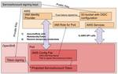
AWS STSを使って一時的な認証情報を扱うOpenShift on AWS環境を構築する
赤帽エンジニアブログ
こんにちは、Red Hatでソリューションアーキテクトをしている北村です。 今回はAWS環境でOpenShiftを構築・利用する際の認証情報の扱いについて考えていきます。 みなさんはOpenShift上のコンテナからAWSを操作する時、どのような形で権限を付与していますか？よくあるパターンとしてIAMユーザーのアクセスキーとシークレットキーをSecretで環境変数としてアタッチすることが多いかと思...
3日前
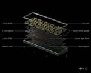
Momoka Zoo65のご紹介
1
遊舎工房スタッフブログ
はじめまして。入舎してはや4か月、倉庫担当のらおかです。 今回は3月1日からグループバイが開催される、Momokaの「Zoo65」のご紹介です！ サンプルをいただいているので所感も書いてみました。 ぜひ最後までご覧ください。
3日前
2018年に検討していたエンジニアリングG組織コンセプト案が発掘されました
エムスリーテックブログ
皆さんこんにちは、こんばんは。エムスリー執行役員VPoEをやりながらPdMもやっている山崎です（デザイン組織のリードと品質管理の責任者もやっています）。 はじめに エムスリーでは現在、アフターコロナ時代の新しい働き方へ向けて、オフィスの縮小を行っております。具体的には、赤坂インターシティ10Fと11Fの2フロアを、10Fの1フロアに統合、フリーアドレスを導入します。 各自、準備のために月末までにデ...
3日前
CloudWatch Syntheticsで外形監視
Fusic Tech Blog
3日前
CloudWatch AgentでサクッとEC2のカスタムメトリクス & ログ取得設定
Fusic Tech Blog
3日前
デバイス認証でAzure ADに条件付きアクセスする
APC 技術ブログ
こんにちは、コンテナソリューション事業部の髙井です。 今回はAzure ADの 条件付きアクセス を使って 準拠したデバイス でのみアクセスできるようにしてみましょう。 AZ-500: Microsoft Azure Security Technologiesあたりを受ける人は、試してみると勉強になるかと思います。 AADは管理部門のお仕事のイメージが強いですが、今回の内容は個人でも出来ますので、...
4日前
「ポータル サイト」アプリでWindowsをAzure ADとMicrosoft IntuneにBYOD登録する
APC 技術ブログ
こんにちは、コンテナソリューション事業部の髙井です。 今回は、あまり触れる機会のないWindowsのBYODデバイス登録について簡単に説明します。 同時公開予定の「デバイス認証でAzure ADに条件付きアクセスする」の補助記事にもなっていますので合わせてご覧ください。 techblog.ap-com.co.jp 全体概要 最初に全体の概要をまとめておきます。以降は、操作画面に沿って説明します。 ...
4日前
2/25 (金)
Tech Team Journalにて、対談記事を掲載いただきました
justInCaseTechnologiesのテックブログ
こんばんは、justInCaseTechnologies CTO の大畑です Tech Team Journal にて、株式会社デジタルハーツ CTO 城倉氏との対談記事を掲載いただきました。 ttj.paiza.jp 色々と書いていただきましたが、当社の魅力としては以下な感じです ✨ レガシーなイメージの保険業界だが、モダンな技術・手法を積極的に取り入れている 優秀なメンバーが集っており、チーム...
4日前
Bugsnag で app version を設定しないともったいない
1
ENECHANGE Developer Blog
ENECHANGE の CTO 室でインフラエンジニアを務めている岩本です。 先日 Bugsnag を初めて使いました。社内用ツールのエラー監視が目的です。ENECHANGE では Bugsnag が以前から活用されているのですが、私はこれまで触る機会がなかったのでした。 Bugsnag を実際に使ってみて「デフォルト設定でも充分便利だが app version を設定しないともったいない」と感じ...
4日前
AWS BackupでS3バケットを特定の時点に復元できるように設定
Fusic Tech Blog
4日前
"EigenGame: PCA as a Nash Equilibrium" の紹介
RareJob Tech Blog
導入 EdTechLab で機械学習エンジニアをしています山城です。 私の所属する EdTechLab では、 AI ビジネス英語スピーキングテスト「PROGOS(R)」のモデル開発と運用を中心に、その他データ分析やR&Dも行っています。 さて、機械学習では特徴量の次元削減に使われる手法として PCA (principal component analysis, 主成分分析) があります。EdTe...
4日前
[AWS]EC2内でDockerコンテナを起動して、ブラウザからアクセスする
WESEEK Tech Blog
こんにちは、システムエンジニアの Kota です。本記事では、 ハンズオン形式で AWS に EC2 を構築して、Docker を install し、Hello world! と表示させてみたいと思います。 対象の読者 […]
4日前
東京のチームに支社のメンバーを迎えることになってジャーマネとしてやったこと
3
freee Developers Hub
freeeでLEGOチームのエンジニアリングマネージャーをしているまっつーです。最近ダイエット頑張ってるので家では沼やマグマを食べてます。 LEGOチームは主にPublic APIやfreeeアプリストアを開発しているチームです。 LEGOチームでは8月にmonacaさんというエンジニアを新規メンバーとして迎えました。 昨年のアドベントカレンダーでfreeeに入社した感想をblogに書いてくれてい...
4日前
Ruby 3.1: error_highlight gemが追加された（翻訳）
17
TechRacho
概要 元サイトの許諾を得て翻訳・公開いたします。 英語記事: Ruby 3.1 adds error highlighting gem | Saeloun Blog 原文公開日: 2022/02/09 原著者: Alkesh Ghorpade サイト: blog.saeloun.com Ruby 3.1: error_highlight gemが追加された（翻訳） プログラミング言語で例外やエラー...
4日前
入社から約4年、Money ForwardのAndroidアプリエンジニアとしての活動を振り返る
38
Engineers' Blog
こんにちは。Androidアプリエンジニアのsyarihuです。 私が入社したの … 続きを読む → Tags: Del.icio.us Facebook TweetThis Digg StumbleUpon Comments: 0 (Zero), Be the first to leave a reply! You might be interested in this: [15...
4日前
Nature RemoやNatureスマート電気で使われている技術と今後の展望 -2022-
7
Nature Engineering Blog
Nature株式会社ソフトウェアエンジニアチームです。 NatureはスマートリモコンNature Remo1をはじめ、家庭の電力マネジメントのためのスマートエナジーハブNature Remo E2や、電気小売事業のNatureスマート電気3を提供しています。「自然との共生をドライブする」をミッションに掲げ、お客様に利便性と同時にエコであるという、新しいライフスタイルを提供したいと考えています。 ...
4日前
投資信託の色んな愛称
MONEX ENGINEER BLOG │マネックス エンジニアブログ
こんにちは。 かれこれ7年位でしょうか。とあることから定期的に国内の全投資信託を眺めています。国内の投資信託は年間約4～500件ほど運用開始されていて、償還（運用終了）していき、流行り廃りもあります。 みなさんは投資信託してますか。iDeCo（個人型確定拠出年金）・企業型DC（企業型確定拠出年金）、つみたてNISAを利用して投資信託の運用を始めた方もいるでしょうか。投資信託で積立している人が増加と...
4日前
テスト自動化により約22%の工数削減をした話
1
MOTEX TECH BLOG
こんにちは。環境対応チームの森本です。 今回は手動で行っていたテストを自動化し、約22％の工数削減を実施したお話をさせていただきたいと思います。 詳細は後述しますが 結論として、Windows 10 の新しい機能更新プログラム(FU) を適用した際の LANSCOPE クライアントのテスト（本記事では「Windows10対応」と表現します）について約22%の工数削減を達成することができました。 ま...
4日前
Kotlin 1.6ではList.minus(List)の処理速度がデフォルトだと若干遅くなってしまうという話
ASKUL Engineering BLOG
こんにちは。ASKULのほかほかごはんです。今回はKotlin1.6におけるCollection操作についての記事になります。 List1からList2の要素を除去する場合、Kotlinでは次のように書けます。 val result = list1 - list2 このコードはKotlin 1.6ではこう書いたほうがパフォーマンスがよくなります (とIntelliJ先生が教えてくれました 😇) ...
4日前
GraphQLライブラリをApollo→Relay→Urqlにハシゴした話
6
TechBlog – Nulab (Japanese)
先日、Recoilで快適フロントエンド開発という記事を書いた藤田です。 GraphQLクライアントライブラリ乗り換え遍歴 私達のプロジェクトではReactのフロントエンドとバックエンドの通信にGraphQLを使っています […] The post GraphQLライブラリをApollo→Relay→Urqlにハシゴした話 appeared first on Nulab (Japanese).
4日前
QAエンジニアとテスターとは？STORES 決済 私たちQAチームの取り組み
3
hey Product Blog
はじめに QAエンジニアとテスター テクノロジー部門決済本部QAグループのめありです。 今回はQAチームの取り組みについてお話します。まずQAとはなんなのかは以前記事にさせていただいたのでぜひご覧ください。 tech.hey.jp QAって実はいろんな業務があるんです。 QAエンジニアもそうだしテスター だってそうだし、QAアナリストもいればQAマネージャー、テスト自動化エンジニアと呼ばれるような...
4日前
AIOpsとは？AIOpsの概要・導入メリット・ユースケースを解説
テックファームブログ
DXやデジタル化が急速に進む中、様々なシステムやサービスが展開され、ビジネスで扱うデータ量が増加し続け、その運用に多大なコストやリソースが必要とされています。 経済産業省が発表したレポート「IT人材需給に関する調査」の中 […]
4日前
【インタビュー】ラクスのテックリード/リードエンジニア ～開発組織 後編～ | RAKUS Developers Blog
3
ラクス エンジニアブログ
こんにちは！ 技術広報のyayawowoです。 ラクスでは、CMでお馴染みとなってきました楽楽精算をはじめ、数多くのプロダクトを開発及びご提供させていただいております。 今回はプロダクト開発に携わる「ラクスのテックリード」の皆様に、 チームでの役割とは？ テックリード/リードエンジニアの魅力とは？ 好きな技術、おすすめの技術書とは？ 今後挑戦したいことは？ などなど、ざっくばらんにインタビューさせ...
4日前
SRE伝道師としてMicroservices SRE チームが取り組んでいる事例
59
メルカリエンジニアリングブログ
※この記事は、"Blog Series of Introduction of Developer Productivity Engineering at Mercari" の一環で書かれています。 著 […]
4日前
【インタビュー】ラクスのテックリード/リードエンジニア ～開発組織 前編～ | RAKUS Developers Blog
4
ラクス エンジニアブログ
こんにちは！ 技術広報のyayawowoです。 ラクスでは、CMでお馴染みとなってきました楽楽精算をはじめ、数多くのプロダクトを開発及びご提供させていただいております。 今回はプロダクト開発に携わる「ラクスのテックリード」の皆様に、 チームでの役割とは？ テックリード/リードエンジニアの魅力とは？ 好きな技術、おすすめの技術書とは？ 今後挑戦したいことは？ などなど、ざっくばらんにインタビューさせ...
4日前
【インタビュー】ラクスのテックリード/リードエンジニア ～横断部署・インフラ組織編～ | RAKUS Developers Blog
2
ラクス エンジニアブログ
こんにちは！ 技術広報のyayawowoです。 ラクスでは、CMでお馴染みとなってきました楽楽精算をはじめ、数多くのプロダクトを開発及びご提供させていただいております。 今回はプロダクト開発に携わる「ラクスのテックリード」の皆様に、 チームでの役割とは？ テックリード/リードエンジニアの魅力とは？ 好きな技術、おすすめの技術書とは？ 今後挑戦したいことは？ などなど、ざっくばらんにインタビューさせ...
4日前
双方向(循環)レプリケーションの危険性について
スマートスタイル TECH BLOG
はじめに MySQL におけるレプリケーションでは、システムの要件によって以下のように様々な構成を取ることができます。 今回はその中でも、以下のように双方向にレプリケーションをおこなっている(マルチ(デュアル)マスター・循環レプリケーション)構成について、その危険性について改めて確認していきたいと思います。 なお、弊社では双方向(循環)レプリケーション構成の利用については推奨しておりません。 双方...
4日前
新卒エンジニアが一年目の業務を通してプロダクトやチームについて考えたこと
2
Adwaysエンジニアブログ
はじめまして、昨年4月に新卒で入社した上田と申します。今日は一年目の業務の振り返りを兼ねて、働く中でプロダクトやチームについて考えたことをまとめようと思います。 先輩社会人のみなさまからすれば何を当たり前なことをと思われるかもしれませんが、最近まで学生だった自分にとっていろいろな驚きや発見があった一年目だったので、新卒時代を思い出しながら温かい目で見ていただければ幸いです。一方もうすぐ社会人、ある...
4日前
PrometheusでStarlinkを監視する方法
Sysdig
PrometheusでStarlinkを監視する方法
4日前
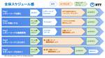
新入社員ソフトウェア研修「レガシーコード改善ハンズオン」を実施しました！
48
NTT Communications Engineers' Blog
こんにちは！ 今年もう2ヶ月ほど経ちましたがまだまだ寒い日が続いていますね。 イノベーションセンターの原田です。 本日は2021年11月頃に実施しました新入社員研修の取り組みについてご紹介します。 研修の概要について このハンズオンは新入社員が半年ぐらい業務に携わった頃に おそらく対峙する or したであろうレガシーなコードについて、 どのように立ち向かうべきか?を5日間チームで手を動かしながら学...
4日前
テスト文化はなぜ作れないのか？
106
Gaudiy Tech Blog
こんにちは。エンタメ領域のDXを推進するブロックチェーンスタートアップ、Gaudiyでフロントエンドエンジニアをしているkodai（@r34b26）です。 Gaudiyでは、以前のtech blogでお伝えしたように、ATDDやフロントエンドのテストに取り組んできました。 techblog.gaudiy.com ですが、正直にいうと、Cucumberを使ったフロントATDDは運用がうまく回っていま...
4日前
30代からでもプログラミングの勉強を始められる学習コンテンツ紹介
paiza開発日誌
こんにちは。谷口です。最近、プログラミングの勉強を始めたり、エンジニアとしての就職・転職を目指したりする人が増えてきました。特に20代の若手や第二新卒に当たる方だけでなく、30代以上で未経験の方でも、IT業界への転職を希望される方が増えてきていると感じます。実際に コロナ禍の終息が見えず、成長が見込める業界に転職したい リモートで働ける仕事がしたい 将来的に役に立つスキルを身に付けたい といったこ...
4日前
エンジニア200名から7名の会社に転職してみたら
1
Kurashicom Tech Blog
自己紹介 テクノロジーグループの冨田です。 直近はコーポレートサイトのリニューアル、ドメイン変更のインフラ面を担当していました。 続きをみる
4日前
GMO Research システム部心得〜みんなに優しいPRの上げ方とソースの書き方編〜
1
GMO RESEARCH Tech Blog
こんにちは。システム部のマツムラです！ 今年の夏頃から10年前の負債を返すプロジェクトが絶賛進行中で、バタバタな毎日を送っています。 さて、私たちのチームではコードレビューに関してチーム全員がレビュワ […]
4日前
ジモティー Android チームの課題について
ジモティー Tech Blog
はじめに Androidエンジニアの林です。 ジモティーのサービスも10年を超え、昔のコードがまだまだ存在しており、定期的にリファクタを行なっています。 そこで現在チームが抱えている課題をいくつか紹介したいと思います。 まだまだJavaのコードがある 新規画面はKotlinで書くことがルール化されているのですが、昔からあるような主要画面は全てJavaで書かれていました。 2021年はその主要画面を...
4日前
GKE NodePool の変更をダウンタイム無しで行う Terraform module を作った
mixi developers - Medium
4日前
チームのコラボレーションを支える"ミッションツリー"
2
スタディサプリ Product Team Blog
こんにちは。SRE Team の @chaspy です。 リクルートでは、チームがやるべきことを、メンバーの納得感を持って仕事してもらうためにミッションを設定しています。ミッションは WCM - Will / Can / Must というフレームワークを用いて、本人の希望、本人の能力、チームとして求められていることを明文化して決定されます。 そんなミッションですが、実際の仕事は自分1人で独立して遂...
4日前
インターンでPHPのレガシーコード改善を行いました
PR TIMES 開発者ブログ
はじめまして、PR TIMESの開発本部でインターンをさせていただいている神戸と申します。インターンでの業務としては主にPHPのレガシーコードのリファクタリングを行っています。 はじめに 自分は情報系の学校に通ってはいま […]
4日前
キャディでの Streamlit 活用事例
1
CADDi Tech Blog
こんにちは。ソフトウェアエンジニアの江良です。 普段は Web アプリケーションのコードをせっせと書いて暮らしているのですが、AI Lab の誕生に伴い、機械学習を専門とするエンジニアと協業する機会も増えてきました。 今 […] The post キャディでの Streamlit 活用事例 appeared first on CADDi Tech Blog.
4日前
【新卒研修カリキュラム】データセンター見学会のお話
GMO Developers
データセンターとは？ サーバーを設置する物理的な建物を指す言葉です。データセンター内部には多数のサーバーがラックに設置されています。データセンターの建物内は、24時間365日有人監視の元運営されています。通常は社内のメン […]
4日前
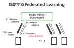
【インターンレポート】 プライバシを保護したFederated Learningの安全性評価
LINE ENGINEERING
2021年夏のインターンシップに参加したお茶の水女子大学の松本茉倫です．インターンシップでは「局所差分プライバシを適用したFederated Learningの安全性評価」について研究しました． 本研究に関する論文は，第14回データ工学と情報マネジメントに関するフォーラム (DEIM2022)にて、3月1日に同タイトル（プライバシを保護したFederated Learningの安全性評価）発表...
4日前
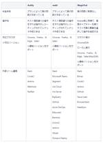
Webテスト自動化に向けて ～導入準備編～
1
Sansan Builders Blog
こんにちは。技術本部 Quality Assuranceグループの藤原です。前回はWebテスト自動化に向けてのツール選定編を書きましたが、今回はツール選定後に自動化導入までに準備することなどを書いていきたいと思います。 buildersbox.corp-sansan.com
5日前
【後編】「さらに拓く」ためのestieのエンジニアリング - イベント書き起こし記事
estie inside blog
※本記事は1/25に開催された「『さらに拓く』ためのestieのエンジニアリング」の書き起こし記事となります イベント概要 estie（エスティ）は2022年1月12日、約10億円のシリーズA資金調達を発表いたしました。調達した資金を活用して、商業用不動産業界のデジタルトランスフォーメーションをより加速すべく、「estie pro」を拡張するマルチプロダクト戦略を展開。これを支えるべく、組織規模を...
5日前
Amazon CloudFront で「AWS マネージドプレフィックスリスト」がサポートされたので使ってみた | NHN テコラス Tech Blog
AWS、機械学習、IoTなどの技術ブログ
はじめに こんにちは。CloudLead チームの Cold-Airflow です。 2022/2/7 に「Amazon CloudFront」にアップデートがありました。 本日より、Amazon CloudFront の AWS マネージ... 続きを読む Amazon CloudFront で「AWS マネージドプレフィックスリスト」がサポートされたので使ってみた first appeared...
5日前
情報系学部出身 基本情報技術者試験勉強法
SIOS Tech. Lab
私は、情報系学部出身で、大学時代から基本情報技術者をいつか取ろうとずっと思っていてなかなか腰が上がらない状態でしたが、2021年度の基本情報技術者試験にて、基本情報技術者の資格をとることができました。 そこで情報系学部在 [...] 情報系学部出身 基本情報技術者試験勉強法 first appeared on SIOS Tech. Lab.
5日前
「ブログ化」リアクションとリアク字チャンネラーでブログのネタを集めよう
1
リーナーテックブログさんのフィード
Leaner 開発チームの黒曜(@kokuyouwind)です。 先日、 Ubie の@takanoripさんが主催するテックブログどうしてるのか座談会に参加させていただきました。 https://twitter.com/takanoripe/status/1486644757644611586 この座談会の中で、 Speee のゆっけさんから、ブログのネタ集めにリアク字チャンネラーを活用している...
5日前
メルカリShopsでのDesign Docs運用について
8
メルカリエンジニアリングブログ
こんにちは! ソウゾウのSoftware Engineerの@ogataka50です。連載：メルカリShops 開発の裏側 Vol.2の9日目を担当させていただきます。 9日目はメルカリShopsを開発する中でのDesi […]
5日前
Nuxt.jsの初期化処理について
3
メルカリエンジニアリングブログ
はじめに こんにちは、メルペイフロントエンドチームの @tokuda109 です。 この記事は、メルペイフロントエンドチームで取り組んでいるパフォーマンス改善について紹介するシリーズ記事の第3弾の記事で、ブラウザ上の N […]
5日前
Cookpad Summer Internship 2022 を開催します！
4
クックパッド開発者ブログ
こんにちは、ボイスサービス部の ymd (@y_am_a_da) です。今年は新卒採用エンジニアリーダーもやっています。 今年もクックパッドはサマーインターンシップを開催します！本記事ではエンジニアコースについてご紹介いたします。 以下のサイトからご応募頂けます。 internship.cookpad.jp 今年は、 15-day Tech Course と 3-day Tech Course の...
5日前
アウトプットが苦手なメンバーで記事投稿イベントを1ヶ月間行ったら成長できた話
1
Wedding Park CREATORS Blog
こんにちは！ウエディングパークのエンジニアのほんぼです。 今回はアウトプットの苦手意識を克服するために行った「Advent Calendar in バレンタイン🍫 2022」についてお話させていただきます。 先にまとめを […] アウトプットが苦手なメンバーで記事投稿イベントを1ヶ月間行ったら成長できた話 first appeared on Wedding Park CREATORS Blog.
5日前
【入社エントリ】スタートアップとM&Aと私。
M&Aクラウド開発者ブログ
結論、この記事を3行で言うと。 私徳本はExit戦略がないまま起業して、失敗した。 その後別会社でPMI、これまた失敗。 「どんな終わりを迎えたいのか」は何を始めるにしても大事。 挨拶と駄文 こんにちは。M&Aクラウドでプロダクトマネージャをしております、とくちゃん（@PdMtokuchan）と申します。このブログを見てくださってる熱烈なM&Aクラウドマニアの方にとっては周知のことかと存じますが、...
5日前
詳解 Linux ネットワーク - NAPI 編 (後編)
9
VA Linux エンジニアブログ
前編では、NAPI とそれに関連するソフトウェア割り込みの仕組みについて解説しました。 本稿では、前回の最後に触れた通り、Linux kernel に組み込まれている、NIC をソフトウェア割り込み以外で polling するための仕組みである、Busy Poll Socket と kthread NAPI polling について解説します。
5日前
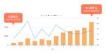
【Tech Talk 動画紹介】個人開発サービスが2021年でユーザー数が10倍に成長した話
8
エムスリーテックブログ
こんにちは、BIRチームソフトウェアエンジニアの宮地です。 BIRはビジネスインテリジェンス&リサーチの略で、そこでは医療従事者の会員向けアンケートをベースに、製薬会社へのマーケティング支援を提供する事業を行っています。 2022年始にTech Talk という社内勉強会で個人開発しているWebサービスについて話しました。 youtu.be 私は2018年末から個人開発としてWalicaという割り...
5日前
Jenkins Day Japan 2021に登壇させていただきました
19
MonotaRO Tech Blog
こんにちは。金谷です。 2021年12月10日に行われました、Jenkins Day Japan 2021に登壇させていただいた報告です。 cloudbees.techmatrix.jp 本ブログにご訪問いただきました テクマトリックス株式会社 の方にお声がけいただいたことがきっかけで、登壇、講演させていただくことになりました。 改めまして、貴重な機会をいただき、ありがとうございました。 登壇のた...
5日前
投稿100 本目! これまでの振り返り
アクトインディ開発者ブログ
morishitaです。 このエントリで私の 100 本目の投稿となります。 桁が増えてひと区切りということでこれまでの自分の投稿を振り返りたいと思います。 最初の投稿が 2017/08/14 の「いこレポ はじめました。」でした。 そこから今月まで 55 ヶ月、ということは月に約 1.8 本。 だいたい隔週に 1 本投稿してきたことになります。 実際には毎日のように投稿していた時期もあれば、数週...
5日前
Rust 1.59を早めに深掘り
OPTiM TECH BLOG
インラインアセンブリや分割代入ができるようになったRust 1.59の変更点を詳しく紹介します。
5日前
「エンジニア組織論への招待」という本から学んだ言葉の意味について
1
vivit engineering blog
こんにちは、技術開発部の河村です。 アウトドアメディア、hinataの開発リーダーをしています。 2021年9月-12月にかけてvivit社内で「エンジニア組織論への招待」の輪読会を行いましたが、今回はその中で普段使っている言葉の意味を改めて知ることで目から鱗だったものをまとめてみました。 gihyo.jp 輪読会を始めたきっかけ vivit社内では2週間に1度のペースで1on1を行っており、より...
5日前
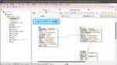
A5:SQL Mk-2に回帰した話
1
フューチャー技術ブログ
<h2 id="はじめに"><a href="#はじめに" class="headerlink"
5日前
2/24 (木)
PowerAppsのキャンバスアプリを外部リンクから開く【アプリtoアプリ編】#PowerPlatformリレー
cloud.config Tech Blog
皆さんはWebリンクや、キャンバスアプリのボタンから別のキャンバスアプリを開きたいと思ったことはあるでしょうか。軽量化のために機能ごとに分けたり、昔作ったアプリへ誘導したいなど、様々なケースが考えられます。 今回はそのよ […] PowerAppsのキャンバスアプリを外部リンクから開く【アプリtoアプリ編】#PowerPlatformリレー first appeared on cloud.conf...
5日前
PDCAとOODAはどこが違う？OODAが現代に適している理由
1
テックファームブログ
「PDCAサイクルを回しているはずなのに、結果が出にくくなっている…。」と感じることはありませんか？ インターネットやSNSが発達し、誰でも気軽に情報へアクセスできるようになった現代では、消費者やユーザーのニーズの移り変 […]
5日前
GIPを節約するサーバー間フォワードの設定事例
cocone engineering
こんにちは。cocone connectでインフラエンジニアを担当している S です。 先日、社内業務で使用しているオンプレミス（以降、オンプレ環境と記します）の、サーバー環境で、GIPを節約して、サーバー […]
5日前
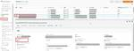
【AWS】サブネットの空きIPとENIの情報を確認する話
BFT名古屋 TECH BLOG
こんにちは！ BFT名古屋支店の佐野です。 つい最近、AWS触りたての方から「VPC内のサブネット空きIPの数と、サブネットのIPを使っているものの情報ってどこから見るの？」という質問を受けました。 その時は簡単に回答を返したのですが、よくよく思い返した時に、どちらもネットワークに関わるものでありながら見れるコンソールが別という、ちょっと分かりにくい面があるかもしれないと考えました。 なので今回は...
5日前
【ココナラバトンリレー】マーケター 奈美ちゃん
ココナラよもやまブログ
ココナラメンバーの仕事からプライベートまで！Q&A形式で回答し、次のメンバーにバトンを繋ぐ「ココナラバトンリレー」！第9回目は、頭皮がつよいピンクのロン毛！奈美ちゃん！ １．名前とあだ名を教えてください！ なみさん（本当は「なみちゃん」と呼んでもらえると嬉しい） 2.どこのチームに所属してますか？ マーケティング部 集客グループ 集客チーム 3.ココナラではどんな仕事をしてますか？ さまざまな媒体...
5日前
Red Hat Application Services NewsLetter 2022/3月号
赤帽エンジニアブログ
Red Hat のソリューションアーキテクトの伊藤ちひろです。 Red Hat にはクラウドネイティブアプリの開発に役立つ、ソフトウェアのラインナップが充実していることをご存知ですか？ ここでは、それらのソフトウェア [Red Hat Application Services] に関する注目ニュースを、各製品技術に特化したソリューションアーキテクトが、ご紹介します。 今回は 2022/3月号となり...
5日前
Nuxt3のNitroでどれくらい早くなったか検証してみた
2
SMARTCAMP Engineer Blog
初めに こんにちは、スマートキャンプ エンジニアの林です。 前回は私の自己紹介記事でしたが、今回は技術的な話をしたいと思います。 現在、Webフロントエンドを書くならNuxt.jsかNext.jsが選択される事が多いですが、皆さんはどちらがお好きですか？ 私はVue.jsを使用したフロントエンド開発の経験が長いので、Nuxt.jsに親和性が高く、Next.js(React.js)の時代とされる今で...
5日前
Dapps TODO リスト をSolidity で作ってみた
mixi developers - Medium
5日前
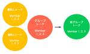
LINEアプリにおける複数人トークとグループトークの統合
2
LINE ENGINEERING
LINEアプリは1対1の会話だけでなく、複数ユーザーでの会話にも対応しています。 これまでLINEにおける複数ユーザーでの会話には、用途に応じてと複数人トークとグループトークの2種類がありました。 複数人トークは一時的な会話の用途で設計されています。複数人トークを作るときに、名前を付けることはできません。友だちをトークに招待する際に相手の承認を待つ必要はなく、「招待」ボタンをタップすると自動的にト...
5日前
Sansan Tech Podcast 再始動！
1
Sansan Builders Blog
人事の高橋洸です。2年ほど前に Sansan Tech Podcast と題して配信していたポッドキャストを再開します！プロダクトが増えエンジニアリング組織も大きくなって、中の人の声を発信していきたい（わたしも知りたい）なと思い、再開するに至りました。毎回ゲストを呼んでエンジニアリングの話、事業の話、組織の話、雑談など緩くお話していきますよ。初回ゲストは VPoE の西場さんです。
5日前
freee会計向けのAPI Profileを使ってCData SyncでGoogle BigQueryとデータ同期してみる
CData Software Blog
こんにちは、CData Software Japanテクニカルサポートエンジニアの大川です。 本記事では、弊社より公開されたfreee会計向けのAPI Profileを使って、CData SyncでGoogle BigQueryとデータを同期する方法をご紹介します。 API Profileとは？ CData Syncとは？ 連携手順 freee会計API利用準備 CData Syncのインストール...
5日前
「DevSecOps Days Tokyo 2021」レポート～初登壇を終えて思うこと ～
Platinum Data Blog by BrainPad
「DevSecOps Days」は、米・カーネギーメロン大学や先端テクノロジー企業の有志が始めた、現代のサイバー脅威に対応しながら、高機能でセキュアなシステム開発を行う手法についての情報交換を行うコミュニティ・イベントです。 2021年12月に開催された当イベントには、当社社員も登壇しましたので、その模様をお届けします。 こんにちは。データエンジニアリング本部の小林です。 2021年12月に開催さ...
5日前
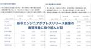
新卒エンジニアがプレスリリース画像の画質改善に取り組んだ話
3
PR TIMES 開発者ブログ
こんにちは、21新卒エンジニアの柳です。 この度、プレスリリースのサムネイル画像とプレスリリース詳細ページ内で掲載されている画像の画質改善を行いました。 今回行った画質改善の対象となる条件は以下の通りです。 12月中旬以 […]
5日前
JavaScriptで壮大なハッキング体験を実現するWebゲーム「Bitburner」で遊んでみた！
340
paiza開発日誌
どうも、まさとらん（@0310lan）です！今回は、ブラウザ上からリアルなハッカー気分を疑似体験できるユニークな無料Webゲームをご紹介します！PCゲームとしてSteamからもリリースされていますが、今回ご紹介するブラウザ版は手軽に遊べるのでオススメです。ターミナル風のゲーム画面が特徴で、実際にJavaScriptを使ってプログラミングもできます。ハッキングやセキュリティなどにご興味ある方も含めて...
5日前
URL監視の始め方 - 押さえておきたいポイントと選び方の指針
QG Tech Blog
Webサービスを立ち上げたら真っ先に導入したい監視項目の 1つに、URL監視が挙げられます。 URL監視とは、その名のとおり URL に対して監視リクエストを飛ばし、そのレスポンスの中身や応答時間を見てサービスの状態を判断する監視手法のことです。
5日前
クラウドはセキュリティエージェントをなくすのか？
Sysdig
クラウドはセキュリティエージェントをなくすのか？
5日前
高速な文字列探索：Daachorseの技術解説
LegalForce Engineering Blog
こんにちは。LegalForce Researchで研究員をしている神田 (@kampersanda) です。 LegalForce Researchでは現在、高速なパターンマッチングマシン Daachorse（ダークホース）を開発・運用しています。文字列処理の基礎である複数パターン検索を提供するRust製ライブラリです。以下のレポジトリで公開されています。 github.com 本記事はDaac...
5日前
最近よくきくリスキリングとは？
1
キカガクの技術ブログ
こんにちは、機械学習講師兼マーケティング部の浅野です。 このところ「リスキリング」という聞き慣れないワードが流行っています。 「リカレント教育」や「学び直し」といった言葉は聞いたことありますが、「リスキリング」とはいった ...
5日前
Sysdigの新機能 - 2022年2月
Sysdig
Sysdigの新機能 - 2022年2月
5日前
Google AdMob ネイティブ広告を使って広告のレイアウトをカスタマイズする
Zaim スタッフの頭の中
こんにちは、株式会社 Zaim で iOS エンジニアをしている TEM です。iOS版の Zaim アプリでは昨年から、AdMob のネイティブ広告を使って、レイアウトをカスタマイズした広告を表示しています。この記事では、その実装の際に得られた知見を紹介したいと思います。 AdMob ネイティブ広告 続きをみる
5日前
build.gradle内でIntelliJのGroovyの補完を効かせる
エキサイト TechBlog.
エキサイト株式会社メディア開発の佐々木です。build.gradle内でIntelliJのGroovyの補完を効かせる方法です。 Gradleとは Groovy製のビルドツールになります。Javaを始めAndroidやC/C++でも使えるようです。モジュールの依存関係の解決やちょっとした処理をGroovyスクリプトで記述・実行できます。 build.gradle 下記の記述をpluginsの前に書...
5日前
P-MAX へのスマート ショッピングとローカル キャンペーンのアップグレードについて
Google Developers Japan
この記事は David Wihl による Google Ads Developer Blog の記事 "Smart Shopping and Local Campaigns upgrading to Performance Max" を元に翻訳・加筆したものです。詳しくは元記事をご覧ください。 code { background-color: transparent } 2022 年 7 月より...
5日前
estieで8ヶ月間インターンをしてみて
estie inside blog
芝浦工業大学大学院の理工学研究科で建築学を専攻している鐘崎豪です。 今回は、私がestieで行った8か月間のインターンを通して、気づいたことや考えたことを紹介したいと思います。 なぜestieでインターンを始めたか？ 何か新しいことに挑戦し、成功体験を積みたかった。 私は、21卒としての就活が不本意な結果となってしまったことや街づくりについて更に学びたいという思いから大学院進学を決めました。 進学...
5日前
議事録をGoogleドキュメントにしたい人
エキサイト TechBlog.
こんばんは！まだ新卒のデザイナー、鍜治本です。 近々、社内Wikiことコンフルにまとめたいことがあるついでに、あることを思い出したので備忘録としてブログネタにします⚰️ Confuluenceに議事録を書くと激重になる 弊社デザイナーは週１で定例会をしており、その週の業務や共有したいことなどを各自がページに記入し、Confluenceに議事録を積み上げていました。 使い始めてしばらくして気付いたの...
5日前
DeNA TechCon 2022開催決定！今年もSWETメンバー登壇します！
DeNA Testing Blog
SWETグループの井口（@hisa9chi）です。本記事では2022年3月に開催予定の弊社イベント DeNA TechCon 2022 に関してSWETグループ含め所属する品質管理部から5件の登壇が予定されております。 品質管理部ではDeNAのものづくりを支え、品質管理のスペシャリストとして、事業部とともにプロダクトの品質を作り込んでいっています。そのためにプロダクト開発の現場に深く入り込み、品質...
5日前
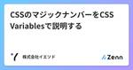
CSSのマジックナンバーをCSS Variablesで説明する
2
株式会社イエソドさんのフィード
腹筋やってますか？ デザイナーの@8845musignです。 プログラミングにおいて、数字をそのまま用いることはマジックナンバーと呼ばれ忌避されます。プリミティブな値をそのまま扱うと意図が伝わりにくいためです。CSSにおいては数字の使用は一般的で、結果として意図の伝わりにくいコードが出来上がってしまうことがあります。 ですが、CSSではCSS Variablesを用いることで値に名前をつけることが...
5日前
Google Cloud（旧GCP）無料で使ってみた！クラウド初心者もかんたんに開設、始め方大解説（前編：説明編）
G-gen Tech Blog
こんにちは、G-genの荒井（@arapote）です。 みなさん、クラウドサーバーはご利用でしょうか？！ 既に利用されている企業様も多いかと思いますが、全国的に見たらまだまだオンプレサーバーを運用しているお客様も多くいらっしゃると思います。 今回はそんなオンプレサーバーを運用している方でも、かんたんにクラウドサーバーをさわっていただけるよう、無料でGoogle Cloud（GCP）をご利用いただけ...
5日前
メタバース体験！Oculus Quest 2でimmersedを使ってバーチャルオフィスにチャレンジしてみた話
テックブログ
Facebook社が会社名を「meta」にするなど、メタバースという言葉が注目を集めている昨今。 少し前に、英 … "メタバース体験！Oculus Quest 2でimmersedを使ってバーチャルオフィスにチャレンジしてみた話" の続きを読む
5日前
第17回LT大会を開催しました
Raccoon Tech Blog [株式会社ラクーンホールディングス 技術戦略部ブログ]
こんにちは、さいとーです！ 先日、第17回LT大会を開催しましたので、その様子を報告させていただきます！ 今期は最後の開催となります！今回も熱いLTバトル？が繰り広げられました！！ 今回の発表テーマ 1人月で70万円/月 … "第17回LT大会を開催しました" の続きを読む
5日前
【AI × VR】近未来!?Oculus Quest 2でできるビジネス英会話レッスンの話
テックブログ
最近はコロナ禍で海外に気軽に行くことはできませんが、海外に行って英語で話したり、外国の方と英語でお話しできるよ … "【AI × VR】近未来!?Oculus Quest 2でできるビジネス英会話レッスンの話" の続きを読む
5日前
Ruby 3.1.1がリリースされました
3
TechRacho
Ruby 3.1.1がリリースされました。 Ruby 3.1.1 Released https://t.co/dRcKVkYzWu — Ruby Language (@rubylangorg) February 18, 2022 リリース情報: Ruby 3.1.1 Released 詳しくはリリース情報をご覧ください。3.1.1はTEENY（小さな）と銘打たれたバグ修正です。 なお、#18436...
5日前
転職初心者のQAエンジニアが語る会社の魅力とやりがい
エス・エム・エス エンジニア テックブログ
2021年10月にエス・エム・エスに、介護事業者向け経営支援サービス「カイポケ」のQAエンジニアとして入社した中村です。前職は第三者検証会社に勤めており、約15年ほどソフトウェアのQA業務に携わり、テスト設計/実施から始まり、テスト計画書/テスト報告書の作成やテストチームの管理など管理業務を経て、最近では、品質管理/分析、改善活動、テスト自動化といった業務を主に担当してきました。色々な現場を転々と...
5日前
【作業効率化ツール】Alfredで業務効率をUPさせるワークフロー３選【Mac向け】
39
虎の穴開発室ブログ
本記事では私が業務効率UPのために使用しているAlfredワークフローを、３つに絞ってご紹介したいと思います。
5日前
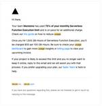
メンテモが Vercel を剥がすまで (経緯編)
3
メンテモエンジニアリング
採用関連のエントリーを何本か上げてきましたが、あれからメンテモのプロダクトもガラッと変わりました。これは絶好のチャンス、ということで今回はよりエンジニアリングらしい記事を書いていこうと思います。タイトルの通り、メンテモは Vercel を剥がしました。近い規模のスタートアップが同様に Vercel を剥がそう、といった事例もあるかと思いますので、メンテモ社が Vercel を剥がすまでの経緯をご紹...
5日前
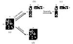
【インターンレポート】有用性の高いモデルを獲得する差分プライベート学習手法
LINE ENGINEERING
大阪大学情報科学研究科の伊藤竜一と申します．2021年の夏期インターンシップに6週間参加し，期間後もアルバイトとして従事していました．プライバシを保護しながらパーソナルデータを含むデータの分析を可能にしたいというモチベーションから，データ生成と差分プライベート学習に関する研究を行いました．この記事では差分プライベート学習について紹介したいと思います．なお，より詳しい内容は第14回データ工学と情報マ...
6日前
知っておくとちょっと便利！シェルスクリプトの作り方2
SIOS Tech. Lab
今号では、前回より引き続き知っておくとちょっと便利なシェルスクリプトの基本についてご紹介します！ コマンド例2 (if 文) if 文とは 条件分岐をさせるための構文 実行結果によって、プログラムに違う動作をさせる 構文 [...] 知っておくとちょっと便利！シェルスクリプトの作り方2 first appeared on SIOS Tech. Lab.
6日前
【2022年2月】OSSサポートエンジニアが気になった！OSS最新ニュース
SIOS Tech. Lab
こんにちは！ 今月も「OSSのサポートエンジニアが気になった！OSSの最新ニュース」をお届けします。 オープンソース開発者と、某大企業とのやりとりが SNS で話題になりました。 オープンソースcURLの作者、某大企業か [...] 【2022年2月】OSSサポートエンジニアが気になった！OSS最新ニュース first appeared on SIOS Tech. Lab.
6日前
2022年3月の技術＆デザイン系イベント予定
Yahoo! JAPAN Tech Blog
ヤフーが主催や協賛をしている、イベントや勉強会の予定をまとめました。
6日前
プレスリリース：Sysdigのセキュリティ可視化ソリューションがOracle Cloudで利用可能に
Sysdig
プレスリリース：Sysdigのセキュリティ可視化ソリューションがOracle Cloudで利用可能に
6日前
CData GraphQL Driver で Shopify Admin GraphQL APIに接続する方法
CData Software Blog
こんにちは。CData Software Japan リードエンジニアの杉本です。 前回までCData GraphQL Driverの新機能概要を解説してきました。 www.cdatablog.jp www.cdatablog.jp 今回はもうちょっと実践的な内容として、Shopify が提供しているGraphQL Admin API に接続する方法を解説したいと思います。 shopify.dev...
6日前
拠点を接続する、最近の話
さくらのナレッジ is_page
この記事は、2022年1月28日(金)に行われたJANOG49における発表を編集部にて記事化したものです。 自己紹介 [caption id="attachment_30465" align="aligncenter" width="680"] JANOG49にて発表中の筆者(写真提供：JANOG49スタッフ)[/caption] 小岩と申します。ビットスターという札幌の会社で働いています。ビッ...
6日前
スタートアップで働くエンジニアが銀の弾丸を求めて愚直に働いている話 ~ 銀の弾丸なんてものは存在しない ~
159
ANDPAD Tech Blog
こんにちは。こんばんは。おはようございます。アンドパッドで現在はバックエンドの方のエンジニアをやっている北村です。 アンドパッドには2021年4月にJOINしまして、現在までANDPADボード(以下ボード)の開発に携わっています。ANDPAD施工管理が比較的長期間の工事をターゲットにしているのに対してANDPADボードは1日〜数日の間に短期間の工事や施工を行う際のスケジュール管理を行えるサービスで...
6日前
Lambdaの落とし穴 - 脆弱なライブラリによる危険性とセキュリティ対策
Flatt Security Blog
はじめに こんにちは、株式会社Flatt Security セキュリティエンジニアの森岡(@scgajge12)です。 本稿では、AWS Lambda で使用するサードパーティーライブラリに脆弱性がある場合の危険性やそのセキュリティ対策について紹介します。 はじめに AWS Lambda について AWS Lambda Layers について AWS Lambda でセキュリティ的に気にすべき点 ...
6日前
プロダクト開発の現場にインタビュー調査を定着させるまでのステップ（2）
Sansan Builders Blog
SansanでUXリサーチャーをしている倉内です。 前回のブログ をお読みいただいた皆様、ありがとうございました。前回は主に、1の部分をお伝えしましたが、今回は2と3について書いていきたいと思います。 インタビュー調査を実施できる環境を整備した背景 実際に、インタビュー調査を実施するまでに整備したこと UXリサーチセンターの現在の運用体制
6日前
WEARにおける画像配信のリプレイス戦略とAkamai Image & Video Managerの導入
33
ZOZO TECH BLOG
こんにちは、WEAR部の繁谷です。SREとしてWEARの運用・保守・開発をしています。 WEARでは、以前の記事で説明した通り、画像配信のリプレイスを行ってきました。本記事ではSRE観点で画像配信のリプレイスやAkamai Image & Video Manager（以下、Image Manager）を利用した画像リサイズの導入の事例を説明します。 techblog.zozo.com WEARにお...
6日前
【Tech Talk 動画紹介】Rubyの値はどう表現されるか (クイズもあるよ)
エムスリーテックブログ
新卒の永山です。 エムスリーでは隔週金曜日に Tech Talk という社内勉強会を実施しています。 エムスリー公式テックチャンネル 【M3 Tech Channel】 では過去の発表のアーカイブを公開しています。 www.youtube.com 今回は上記YouTubeチャンネルに公開されている私の過去の発表について紹介いたします。 www.youtube.com 概要 オススメの対象 発表の補...
6日前
工学的知見と実際の観測データに基づいて物理世界にサービスを展開しています
11
クックパッド開発者ブログ
こんにちは．研究開発部の鈴本 (@_meltingrabbit) です． クックパッドの研究開発部 では，「毎日の料理を楽しみにする」というミッションを実現するために，様々な野心的なチャレンジをしています．一方で，我々研究開発部のメンバーには，自分のもてる技術を用いて，部署内外の課題を発見し，解決するという使命もあるのです． 今回はクックパッドの生鮮 EC プラットフォームサービスであるクックパッ...
6日前
Appleのアカウント削除に関する審査ガイドライン更新への対応
8
ドワンゴ教育サービス開発者ブログ
はじめに こんにちは。 10月に発表された Appleのアカウント削除に関する審査ガイドライン更新のニュースから3ヶ月経ちました。 皆さんいかがお過ごしでしょうか。 私たち N予備校もこのニュース以来、文字通りの忙しい師走となりました。 それまでは非公開のアカウント削除機能がありユーザーの依頼ベースで対応を行なっておりました。Appleの審査ガイドラインの更新に伴い、これをユーザーがアプリから直接...
6日前
COLOPL Tech 勉強会 「Cloud Spanner への挑戦と今」を実施しました！
3
COLOPL Tech Blog
こんにちは。コロプラのバックエンドエンジニア部の山田です。 2022年2月16日に、『Cloud Spanner への挑戦と今』というエンジニア向け勉強会をconnpassで実施させていただきました。 当日のYouTube配信はこちらからご視聴いただけます。 www.youtube.com 勉強会の内容 今回の勉強会では次のようなお話をさせていただきました。 Cloud Spanner 導入の裏話...
6日前
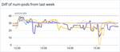
Kubernetes HPA External Metrics の事例紹介
6
メルカリエンジニアリングブログ
こんにちは、メルカリMicroservices SREチームの mtokioka です。Embedded SREとしてマイクロサービスのチームに参加し、サービスの信頼性向上や自動化などの業務に従事しています。 メルカリで […]
6日前
TerraformでGitHub Actions OpenID ConnectのIAM IdPを管理したい
2
Mobile Factory Tech Blog
こんにちは。エンジニアのEadaedaです。 皆さんのチームではGithub Actionsでaws-actions/configure-aws-credentialsを使っていますか？GitHub ActionsでAWS SDKやAWS CLIを使うために必要なクレデンシャルなどを設定してくれるactionで、我々のチームでは最近かなり利用するようになりました。 github.com 使うために...
6日前
Vertex AI Matching Engineをつかった類似商品検索APIの開発
3
メルカリエンジニアリングブログ
こんにちは。ソウゾウの Software Engineer の @wakanapo です。 連載：メルカリShops 開発の裏側 Vol.2の8日目を担当させていただきます。 この記事では Vertex AI Match […]
6日前
サービス立ち上げのリアルが分かるプロジェクト秘話
5
JMDC TECH BLOG
長年蓄積してきた医療ビッグデータをもとにさまざまなサービス・プロダクトを展開しているJMDCでは、新規サービスの立ち上げも積極的に行っています。企業の産業保健活動をサポートするICTソリューション「Pep Up for Work」（ペップアップフォーワーク）もそのひとつで、2021年に本格的にプロジェクトがスタートしました。 今回は、Pep Up for Workプロジェクトチームの4名にインタビ...
6日前
IDCFクラウドコンテナサービス モニタリング機能と永続ストレージについて
IDCF テックブログ
こんにちは。 IDCフロンティア 事業推進本部SE部の掛田（@skakeda）です。 普段はセールスエンジニアとして、IDCFクラウドなど当社サービスのご提案や導入支援を行っております。本記事では前回に引き続き、IDCFクラウドコンテナサービスについて、ご紹介します。 www.idcf.jp
6日前
GitHub Discussionsで社内のQ&Aフォーラムを開設する
LIFULL Creators Blog
プロダクトエンジニアリング部の二宮です。 LIFULL では「エンジニアいつでも相談」という名前で、GitHub Discussionsを使った社内向けの Q&A フォーラムを有志で運営しています 🙌 このフォーラムは「あるシステムについて誰か詳しい人に相談したい」とか「設計についてチーム外にも相談したい」とか、エンジニアリングで困ったことをなんでも聞ける窓口になることを目指しています。最近では...
6日前
Azure Static Web Appsの認証機能でログイン処理を実装する
Alternative Architecture DOJO
こんにちは、MLBお兄さんこと松村です。 前回の記事に引き続き、未だに MLB のロックアウトは終わっていません。キャンプインはまだ先になりそうです涙 SPA のホスティングに適している Azure Static Web Apps の勉強を兼ねて、自分自身にだけ必要な Web サイトを作っています。 自分だけがアクセスできる仕組みは別途記事を書こうと思いますが、今回は Azure Static W...
6日前
組織にSREの文化を作り上げていくEnabling SRE
52
Engineers' Blog
こんにちは、マネーフォワード サービス基盤本部 インフラ部に所属している中谷です … 続きを読む → Tags: Del.icio.us Facebook TweetThis Digg StumbleUpon Comments: 0 (Zero), Be the first to leave a reply! You might be interested in this: Mon...
6日前
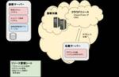
パブリッククラウド向けネットワーク診断の内製化と自動化への取り組み
1
Blog on DeNA Engineering
はじめに こんにちは、セキュリティ技術グループです。 普段は社内サービス・プロダクトの脆弱性診断（Webアプリ/スマホアプリ/ネットワークなど）や、ペネトレーションテストを行なっています。 ここ数年、DeNAでは大規模な移行プロジェクトがあり、大半のシステムがオンプレ環境からクラウド環境へと移行しました。 環境の運用方法も見直され、従来インフラ部門が構築・管理していましたが、各事業部がそれぞれで環...
6日前
Windows11 で WSL を触ってみた
アクトインディ開発者ブログ
morishitaです。 ここ 10 年ほどほとんど Windows OS を使っていません。 社会人になってしばらくは Windows を使ってました。 しかし、やがて仕事では Linux を使うようになり、その後 Mac に乗り換えてからはずっと Mac です。プライベートでも Mac です。 Windows 7 までは Mac 上の VirtualBox の仮想マシンにインストールして極稀に...
6日前
Rustが遅すぎる？プロファイリングで性能向上！
nttlabs - Medium
6日前
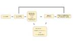
数打ちゃ当たるは的外れ。成果を生み出す「ユーザー中心設計」のABテスト
6
Speee DEVELOPER BLOG
デジタルトランスフォーメーション（DX）事業本部でPMをしています、九島です。 新卒でSpeeeに入社してから、約5年間グロースに取り組んでいて、中でもLPのABテストを継続してやってきました。この記事では、ABテスト初心者の方に向けて、自分の失敗や試行錯誤の過程をお伝えしながら、今一番上手くいっている「ABテストの型」を紹介します。 「サイトのABテストを任されたけど、どう考えたらいいの？」「ち...
6日前
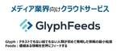
Future Tech Night #19「新聞業界を変革するクラウドサービス「GlyphFeeds」を支えるAWSサービス」
フューチャー技術ブログ
<img src="/images/20220224a/glyphfeeds_top.png" alt="" width="800" height="363"> <h2 id="はじめに"><a href="#はじめに" class="headerlink"
6日前
2/23 (水)
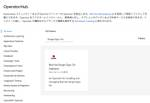
Red Hat Single Sign-on OperatorがGAに
1
赤帽エンジニアブログ
Red Hatのソリューションアーキテクトの井上たかひろです。 Red Hat Single Sign-on OperatorがRed Hat Single Sign-On 7.5.1 からとうとうサポートになりました。 これにより、Red Hat SSOのインストール、特に運用が楽になります。(インストールは元から簡単でしたが。。) この記事では、サポート記念にRed Hat Single Si...
6日前
遊舎工房ゆる部始動
1
遊舎工房スタッフブログ
ティムです。このタイトルを見て、なんぞや、と思う方もいるかもしれません！ 自作キーボードを知らない人に魅力を伝えるきっかけや話題づくりをしたいというコンセプトのもと、広報的な活動を始めてみました。その名も、遊舎工房ゆる部！！！！ ゆる部の由来は、のんびりとした喫茶店のように、ゆるーく、自作キーボード界隈に興味を持ってもらいたい！そんなイメージです。 ゆる部会長特製のロゴはこちら！ ゆるさが伝わるか...
6日前
Profiling Rust applications
nttlabs - Medium
6日前
[UE4] Action RPG の Loading Screen を自分のプロジェクトで動かしてみる
historia Inc – 株式会社ヒストリア
執筆バージョン: Unreal Engine 4.27 皆さんこんにちは。エンジニアの森です。 今回は、Epic から公開されている「Action RPG」の Loading Screen を見てみます。 UE エディタ […] The post [UE4] Action RPG の Loading Screen を自分のプロジェクトで動かしてみる first appeared on histor...
6日前